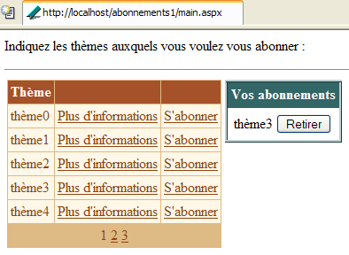
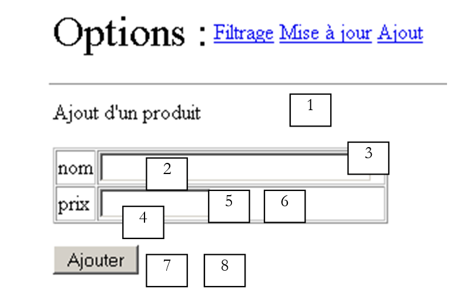
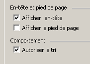
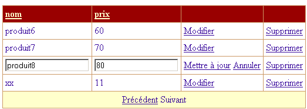
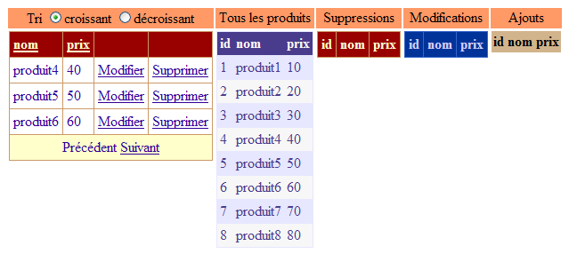
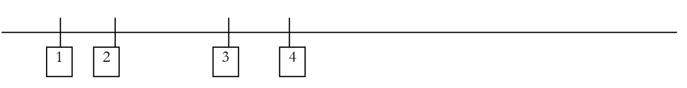
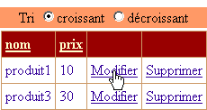
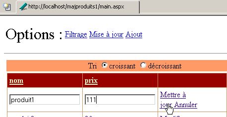

9. ASP 服务器组件 - 3
9.1. 简介
我们将继续研究用户界面，重点探讨 [DataList] 和 [DataGrid] 组件的功能，特别是它们在更新所显示数据方面的能力
9.2. 处理数据绑定组件中与数据相关的事件
9.2.1. 示例
请看以下页面：
 |
该页面包含三个与数据列表相关的组件：
- 一个名为 [DataList1] 的 [DataList] 组件
- 一个名为 [DataGrid1] 的 [DataGrid] 组件
- 一个名为 [Repeater1] 的 [Repeater] 组件
关联的数据列表是数组 {"zero", "one", "two", "three"}。每个数据点都关联一组两个按钮，分别标记为 [Info1] 和 [Info2]。当用户点击其中一个按钮时，文本会显示所点击按钮的名称。此处的目的是演示如何管理一组按钮或链接。
9.2.2. 组件配置
[DataList1] 组件的配置如下：
<asp:datalist id="DataList1" ... runat="server">
<SelectedItemStyle ...</SelectedItemStyle>
<HeaderTemplate>
[début]
</HeaderTemplate>
<FooterTemplate>
[fin]
</FooterTemplate>
<ItemStyle ...></ItemStyle>
<ItemTemplate>
<P><%# Container.DataItem %>
<asp:Button runat="server" Text="Infos1" CommandName="infos1"></asp:Button>
<asp:Button runat="server" Text="Infos2" CommandName="infos2"></asp:Button></P>
</ItemTemplate>
<FooterStyle ...></FooterStyle>
<HeaderStyle ...></HeaderStyle>
</asp:datalist>
我们省略了与 [DataList] 外观相关的所有内容，以便仅关注其内容：
- <HeaderTemplate> 部分定义了 [DataList] 的页眉，而 <FooterTemplate> 部分定义了其页脚。
- <ItemTemplate>部分是用于关联数据列表中每个项的显示模板。它包含以下元素：
- 与该组件关联的数据列表中当前数据项的值：<%# Container.DataItem %>
- 两个分别标记为 [Info1] 和 [Info2] 的按钮。[Button] 类具有 [CommandName] 属性，此处即使用了该属性。它将使我们能够确定是哪个按钮触发了 [DataList] 中的事件。 为了处理按钮点击，我们将为 [DataList] 本身（而非按钮）绑定一个事件处理程序。该处理程序将接收指示点击发生在 [DataList] 哪一行上的信息。[CommandName] 属性将告知我们该行上的哪个按钮触发了点击。
[Repeater1] 组件的配置方式与此非常相似：
<asp:repeater id="Repeater1" runat="server">
<HeaderTemplate>
[début]<hr />
</HeaderTemplate>
<FooterTemplate>
<hr />
[fin]
</FooterTemplate>
<SeparatorTemplate>
<hr />
</SeparatorTemplate>
<ItemTemplate>
<%# Container.DataItem %>
<asp:Button runat="server" Text="Infos1" CommandName="infos1"></asp:Button>
<asp:Button runat="server" Text="Infos2" CommandName="infos2"></asp:Button></P>
</ItemTemplate>
</asp:repeater>
我们仅添加了一个 <SeparatorTemplate> 部分，以便组件显示的连续数据之间用一条水平线分隔。
最后，[DataGrid1] 组件的配置如下：
<asp:datagrid id="DataGrid1" ... runat="server" PageSize="2" AllowPaging="True">
<SelectedItemStyle ...></SelectedItemStyle>
<AlternatingItemStyle ...></AlternatingItemStyle>
<ItemStyle ...></ItemStyle>
<HeaderStyle ...></HeaderStyle>
<FooterStyle ....></FooterStyle>
<Columns>
<asp:ButtonColumn Text="Infos1" ButtonType="PushButton" CommandName="Infos1">
</asp:ButtonColumn>
<asp:ButtonColumn Text="Infos2" ButtonType="PushButton" CommandName="Infos2">
</asp:ButtonColumn>
</Columns>
<PagerStyle .... Mode="NumericPages"></PagerStyle>
</asp:datagrid>
这里我们也省略了样式信息（颜色、宽度等）。当前处于自动生成列模式，这是 [DataGrid] 的默认模式。这意味着列的数量将与数据源中的列数相同。这里只有一列。 我们还添加了两个标记为 <asp:ButtonColumn> 的列。我们定义了与其他两个组件类似的信息，以及按钮类型，此处为 [PushButton]。其默认类型是 [LinkButton]，即链接。此外，数据将启用分页 [AllowPaging=true]，每页显示两项 [PageSize=2]。
9.2.3. 页面布局代码
本示例页面的呈现代码已放置在名为 [main.aspx] 的文件中：
<%@ page codebehind="main.aspx.vb" inherits="vs.main" autoeventwireup="false" %>
<HTML>
<HEAD>
</HEAD>
<body>
<form runat="server">
<P>Gestion d'événements de composants associés à des listes de données</P>
<HR width="100%" SIZE="1">
<table cellSpacing="1" cellPadding="1" bgColor="#ffcc00" border="1">
<tr>
<td ...>DataList</td>
<td ...>DataGrid</td>
<td ...>Repeater</td>
</tr>
<tr>
<td ...>
<asp:datalist id="DataList1" ... runat="server">
<HeaderTemplate>
[début]
</HeaderTemplate>
<FooterTemplate>
[fin]
</FooterTemplate>
<ItemStyle ...></ItemStyle>
<ItemTemplate>
<P><%# Container.DataItem %>
<asp:Button runat="server" Text="Infos1" CommandName="infos1"></asp:Button>
<asp:Button runat="server" Text="Infos2" CommandName="infos2"></asp:Button></P>
</ItemTemplate>
<FooterStyle ...></FooterStyle>
<HeaderStyle ....></HeaderStyle>
</asp:datalist>
<P></P>
</td>
<td ...>
<asp:datagrid id="DataGrid1" ... runat="server" PageSize="2" AllowPaging="True">
<AlternatingItemStyle ...></AlternatingItemStyle>
<ItemStyle ...></ItemStyle>
<HeaderStyle ...></HeaderStyle>
<FooterStyle ...></FooterStyle>
<Columns>
<asp:ButtonColumn Text="Infos1" ButtonType="PushButton" CommandName="Infos1">
</asp:ButtonColumn>
<asp:ButtonColumn Text="Infos2" ButtonType="PushButton" CommandName="Infos2">
</asp:ButtonColumn>
</Columns>
<PagerStyle ... Mode="NumericPages"></PagerStyle>
</asp:datagrid>
</td>
<td ...>
<asp:repeater id="Repeater1" runat="server">
<HeaderTemplate>
[début]<hr />
</HeaderTemplate>
<FooterTemplate>
<hr />
[fin]
</FooterTemplate>
<SeparatorTemplate>
<hr />
</SeparatorTemplate>
<ItemTemplate>
<%# Container.DataItem %>
<asp:Button runat="server" Text="Infos1" CommandName="infos1"></asp:Button>
<asp:Button runat="server" Text="Infos2" CommandName="infos2"></asp:Button></P>
</ItemTemplate>
</asp:repeater>
</td>
</tr>
</table>
<P><asp:label id="lblInfo" runat="server"></asp:label></P>
<P></P>
</form>
</body>
</HTML>
在上面的代码中，我们省略了格式化代码（颜色、线条、大小等）
9.2.4. 页面控件代码
应用程序控件代码已放置在 [main.aspx.vb] 文件中：
Public Class main
Inherits System.Web.UI.Page
' components page
Protected WithEvents DataList1 As System.Web.UI.WebControls.DataList
Protected WithEvents lblInfo As System.Web.UI.WebControls.Label
Protected WithEvents DataGrid1 As System.Web.UI.WebControls.DataGrid
Protected WithEvents Repeater1 As System.Web.UI.WebControls.Repeater
' the data source
Protected textes() As String = {"zéro", "un", "deux", "trois"}
Private Sub Page_Load(ByVal sender As System.Object, ByVal e As System.EventArgs) Handles MyBase.Load
If Not IsPostBack Then
'data source links
DataList1.DataSource = textes
DataGrid1.DataSource = textes
Repeater1.DataSource = textes
Page.DataBind()
End If
End Sub
Private Sub DataList1_ItemCommand(ByVal source As Object, ByVal e As System.Web.UI.WebControls.DataListCommandEventArgs) Handles DataList1.ItemCommand
' an event has occurred on one of the [datalist] lines
lblInfo.Text = "Vous avez cliqué sur le bouton [" + e.CommandName + "] de l'élément [" + e.Item.ItemIndex.ToString + "] du composant [DataList]"
End Sub
Private Sub Repeater1_ItemCommand(ByVal source As Object, ByVal e As System.Web.UI.WebControls.RepeaterCommandEventArgs) Handles Repeater1.ItemCommand
' an event has occurred on one of the [repeater] lines
lblInfo.Text = "Vous avez cliqué sur le bouton [" + e.CommandName + "] de l'élément [" + e.Item.ItemIndex.ToString + "] du composant [Repeater]"
End Sub
Private Sub DataGrid1_ItemCommand(ByVal source As Object, ByVal e As System.Web.UI.WebControls.DataGridCommandEventArgs) Handles DataGrid1.ItemCommand
' an event has occurred on one of the [datagrid] lines
lblInfo.Text = "Vous avez cliqué sur le bouton [" + e.CommandName + "] de l'élément [" + e.Item.ItemIndex.ToString + "] de la page [" + DataGrid1.CurrentPageIndex.ToString() + "] du composant [DataGrid]"
End Sub
Private Sub DataGrid1_PageIndexChanged(ByVal source As Object, ByVal e As System.Web.UI.WebControls.DataGridPageChangedEventArgs) Handles DataGrid1.PageIndexChanged
' change page
With DataGrid1
.CurrentPageIndex = e.NewPageIndex
.DataSource = textes
.DataBind()
End With
End Sub
End Class
注释：
- [textes] 数据源是一个简单的字符串数组。它将绑定到页面上的三个控件
- 该绑定在首次请求期间通过 [Page_Load] 过程建立。对于后续请求，这三个控件将通过 [VIEW_STATE] 机制获取其值。
- 这三个组件都为 [ItemCommand] 事件提供了处理程序。当用户点击组件某一行中的按钮或链接时，该事件就会触发。处理程序会接收两项信息：
- source：触发该事件的对象（按钮或链接）的引用
- a：关于该事件的信息，类型为 [DataListCommandEventArgs]、[RepeaterCommandEventArgs] 或 [DataGridCommandEventArgs]（视具体情况而定）。a 参数包含多种信息。其中有两项对我们尤为重要：
- a.Item：表示发生事件的行，类型为 [DataListItem]、[DataGridItem] 或 [RepeaterItem]。无论具体类型如何，[Item] 元素都具有一个 [ItemIndex] 属性，用于指示该 [Item] 在所属容器中的行号。在此，我们将显示该行号
- a.CommandName：是触发该事件的按钮（Button、LinkButton、ImageButton）的 [CommandName] 属性。结合前面的信息，我们可以确定容器中的哪个按钮触发了 [ItemCommand] 事件
9.3. 应用程序 - 管理订阅列表
既然我们已经了解如何拦截数据容器内的事件，下面将通过一个示例展示如何处理这些事件。
9.3.1. 简介
本文介绍的应用程序模拟了一个邮件列表订阅应用程序。该应用程序由一个三列的 [DataTable] 对象定义：
name | 类型 | 角色 |
字符串 | 主键 | |
字符串 | 列表主题名称 | |
字符串 | 对列表所涵盖主题的描述 |
为了简化示例，上文中的 [DataTable] 对象将通过编程以任意方式构建。在实际应用中，它通常由数据访问类的某个方法提供。列表表将在 [Application_Start] 过程 中构建，生成的表将存储在应用程序中。 我们将该表命名为 [dtThèmes]。用户将从该表订阅特定主题。用户的订阅列表将存储在一个名为 [dtAbonnements] 的 [DataTable] 对象中，其结构如下：
名称 | 类型 | 角色 |
字符串 | 主键 | |
字符串 | 列表主题名称 |
单页应用程序如下：
 | |||||
编号 | 名称 | 类型 | 属性 | 角色 | |
DataGrid | 可订阅的邮件列表 | ||||
DataList | 用户对上述列表的订阅列表 | ||||
面板 | 关于用户所选主题的信息面板，其中包含一个 [更多信息] 链接 | ||||
标签 | [panelInfos] 的一部分 | 主题名称 | |||
标签 | 属于 [panelInfos] | 主题描述 | |||
标签 | 应用程序信息提示 | ||||
本示例旨在演示 [DataGrid] 和 [DataList] 组件的使用，特别是处理这些数据容器行级别的事件。因此，该应用程序没有提交按钮，例如将用户的选项保存到数据库中。尽管如此，它仍具有现实意义。这与用户将产品（订阅）添加到购物车的电子商务应用程序非常接近。
9.3.2. 功能
用户首先看到的视图如下：
 |
用户点击 [更多信息] 链接以获取主题详情。这些信息将显示在 [panelInfos] 中：

用户点击 [订阅] 链接即可订阅某个主题。所选主题将被添加到 [dlSubscriptions] 组件中：

用户可能希望订阅自己已订阅的列表。此时会弹出提示信息：

最后，用户可通过上方 [取消订阅] 按钮取消任何主题的订阅。此操作无需确认。由于用户可轻松重新订阅，因此此处无需确认。以下是取消订阅 [topic1] 后的界面：

9.3.3. 配置数据容器
类型为 [DataGrid] 的 [dgThèmes] 组件绑定到了类型为 [DataTable] 的数据源。其格式化是通过 [DataGrid] 属性面板中的 [Auto Format] 链接完成的。其属性是通过同一面板中的 [Property Generator] 链接定义的。生成的代码如下（格式化代码已省略）：
<asp:datagrid id="dgThèmes" AutoGenerateColumns="False" AllowPaging="True" PageSize="5"
runat="server">
<ItemStyle ...></ItemStyle>
<HeaderStyle ...></HeaderStyle>
<FooterStyle ...></FooterStyle>
<Columns>
<asp:BoundColumn DataField="thème" HeaderText="Thème"></asp:BoundColumn>
<asp:ButtonColumn Text="Plus d'informations" CommandName="infos"></asp:ButtonColumn>
<asp:ButtonColumn Text="S'abonner" CommandName="abonner"></asp:ButtonColumn>
</Columns>
<PagerStyle HorizontalAlign="Center" ... Mode="NumericPages"></PagerStyle>
</asp:datagrid>
请注意以下几点：
我们在 <columns>...</columns> 部分中自行定义要显示的列 | |
用于数据分页 | |
定义 [DataGrid] 的 [theme] 列（HeaderText），该列将与数据源的 [theme] 列（DataField）建立关联 | |
定义了两列按钮（或链接）。为了区分同一行中的两个链接，我们将使用它们的 [CommandName] 属性。 |
[DataGrid] 组件尚未完全配置。它将在控制器代码中进行配置。
类型为 [DataList] 的 [dlAbonnements] 组件与类型为 [DataTable] 的数据源相关联。其格式化是通过 [DataList] 属性面板中的 [AutoFormat] 链接完成的。其属性直接在呈现代码中定义。该代码如下（格式化代码已省略）：
<asp:DataList id="dlAbonnements" ... runat="server" >
<HeaderTemplate>
<div align="center">
Vos abonnements</div>
</HeaderTemplate>
<ItemStyle ...></ItemStyle>
<ItemTemplate>
<TABLE>
<TR>
<TD><%#Container.DataItem("thème")%></TD>
<TD>
<asp:Button id="lnkRetirer" CommandName="retirer" runat="server" Text="Retirer" /></TD>
</TR>
</TABLE>
</ItemTemplate>
<HeaderStyle ...></HeaderStyle>
</asp:DataList>
定义 [DataList] 的标题文本 | |
定义 [DataList] 中的当前项目——此处我们放置了一个包含两列一行的表格。第一个单元格将显示用户想要订阅的主题名称，另一个单元格将包含 [取消订阅] 按钮，允许用户取消其选择。 |
9.3.4. 展示页面
呈现代码 [main.aspx] 如下：
<%@ page src="main.aspx.vb" inherits="main" autoeventwireup="false" %>
<HTML>
<HEAD>
<title></title>
</HEAD>
<body>
<P>Indiquez les thèmes auxquels vous voulez vous abonner :</P>
<HR width="100%" SIZE="1">
<form runat="server">
<table>
<tr>
<td vAlign="top">
<asp:datagrid id="dgThèmes" ... runat="server">
...
</asp:datagrid>
</td>
<td vAlign="top">
<asp:DataList id="dlAbonnements" ... runat="server" GridLines="Horizontal" ShowFooter="False">
....
</asp:DataList>
</td>
<td vAlign="top">
<asp:Panel ID="panelInfo" Runat="server" EnableViewState="False">
<TABLE>
<TR>
<TD bgColor="#99cccc">
<asp:Label id="lblThème" runat="server"></asp:Label></TD>
</TR>
<TR>
<TD bgColor="#ffff99">
<asp:Label id="lblDescription" runat="server"></asp:Label></TD>
</TR>
</TABLE>
</asp:Panel>
</td>
</tr>
</table>
<P>
<asp:Label id="lblInfo" runat="server" EnableViewState="False"></asp:Label></P>
</form>
</body>
</HTML>
9.3.5. 控制器
控制逻辑分布在 [global.asax] 和 [main.aspx] 文件中。[global.asax] 文件内容如下：
相关的 [global.asax.vb] 文件包含以下代码：
Imports System.Web
Imports System.Web.SessionState
Imports System.Data
Imports System
Public Class global
Inherits System.Web.HttpApplication
Sub Application_Start(ByVal sender As Object, ByVal e As EventArgs)
' initialize the data source
Dim thèmes As New DataTable
' columns
With thèmes.Columns
.Add("id", GetType(System.Int32))
.Add("thème", GetType(System.String))
.Add("description", GetType(System.String))
End With
' column id will be primary key
thèmes.Constraints.Add("cléprimaire", thèmes.Columns("id"), True)
' lines
Dim ligne As DataRow
For i As Integer = 0 To 10
ligne = thèmes.NewRow
ligne.Item("id") = i.ToString
ligne.Item("thème") = "thème" + i.ToString
ligne.Item("description") = "description du thème " + i.ToString
thèmes.Rows.Add(ligne)
Next
' put the data source in the application
Application("thèmes") = thèmes
End Sub
Sub Session_Start(ByVal sender As Object, ByVal e As EventArgs)
' start of session - create an empty subscriptions table
Dim dtAbonnements As New DataTable
With dtAbonnements
' the columns
.Columns.Add("id", GetType(String))
.Columns.Add("thème", GetType(String))
' the primary key
.PrimaryKey = New DataColumn() {.Columns("id")}
End With
' the table is placed in the session
Session.Item("abonnements") = dtAbonnements
End Sub
End Class
[Application_Start] 过程在应用程序收到第一个请求时执行，它构建了一个包含可订阅主题的 [DataTable]。该表是通过代码任意构建的。回想一下我们之前学过的方法。我们按以下顺序进行构建：
- 一个空的 [DataTable] 对象，既无结构也无数据
- 通过定义列（名称和数据类型）来构建表结构
- 代表有效数据的表行
在此我们添加了一个主键。“id”列作为主键。表达主键有多种方式。这里我们使用了约束。在 SQL 中，约束是一条规则，行中的数据必须遵循该规则，该行才能被添加到表中。可能存在各种各样的约束。“主键”约束强制要求其应用的列具有唯一且非空的值。 实际上，主键可以由涉及多个列值的表达式组成。[DataTable].Constraints 是给定表的约束集合。要添加约束，我们使用 [DataTable.Constraints.Add] 方法。该方法有多种签名。在此，我们使用了 [Add(Byval name as String, Byval column as DataColumn, Byval primaryKey as Boolean)] 方法：
约束名称 - 可以是任意名称 | |
将作为主键的列 - 类型为 [DataColumn] | |
必须设置为 [true] 才能使 [column] 成为主键。如果 [primaryKey=false]，则 [column] 仅受唯一约束的约束 |
要将名为“id”的列设为 [dtAbonnements] 表的主键，我们编写：
[Session_Start] 存储过程在应用程序收到来自客户端的第一个请求时执行。它用于创建针对每个客户端的特定对象，这些对象必须在客户端的各种请求之间保持持久化。该存储过程构建了客户端订阅的 [DataTable]。由于该表初始为空，因此仅构建其结构。随着请求的发出，表中将逐步填充数据。 在此处，“id”列同样作为主键。我们采用了一种不同的技术来声明此约束：
是构成主键的列数组——此处我们声明了一个单元素数组：名为“id”的列 |
当客户端请求到达控制器 [main.aspx] 时，两个 [DataTable] 对象均可被访问：主题表的对象位于应用程序中，订阅表的对象位于会话中。控制器 [main.aspx.vb] 代码如下：
Imports System.Data
Public Class main
Inherits System.Web.UI.Page
Protected WithEvents dgThèmes As System.Web.UI.WebControls.DataGrid
Protected WithEvents lblThème As System.Web.UI.WebControls.Label
Protected WithEvents lblDescription As System.Web.UI.WebControls.Label
Protected WithEvents dlAbonnements As System.Web.UI.WebControls.DataList
Protected WithEvents lblInfo As System.Web.UI.WebControls.Label
Protected WithEvents panelInfo As System.Web.UI.WebControls.Panel
Protected dtThèmes As DataTable
Protected dtAbonnements As DataTable
Private Sub Page_Load(ByVal sender As System.Object, ByVal e As System.EventArgs) Handles MyBase.Load
...
End Sub
Private Sub liaisons()
...
End Sub
Private Sub dgThèmes_PageIndexChanged(ByVal source As Object, ByVal e As System.Web.UI.WebControls.DataGridPageChangedEventArgs) Handles dgThèmes.PageIndexChanged
...
End Sub
Private Sub dgThèmes_ItemCommand(ByVal source As Object, ByVal e As System.Web.UI.WebControls.DataGridCommandEventArgs) Handles dgThèmes.ItemCommand
...
End Sub
Private Sub infos(ByVal id As String)
...
End Sub
Private Sub abonner(ByVal id As String)
...
End Sub
Private Sub dlAbonnements_ItemCommand(ByVal source As Object, ByVal e As System.Web.UI.WebControls.DataListCommandEventArgs) Handles dlAbonnements.ItemCommand
...
End Sub
End Class
[Page_Load] 过程的主要作用是：
- 检索分别位于应用程序和会话中的两个表 [dtThèmes] 和 [dtAbonnements]，以便页面上的所有方法都能访问它们
- 将这两个数据源中的数据绑定到各自的容器中。此操作仅在首次请求时执行。对于后续请求，无需系统地执行绑定操作；当需要执行时，有时可能需要等待 [Page_Load] 之后发生的事件来执行该操作。
[Page_Load] 的代码如下：
Private Sub Page_Load(ByVal sender As System.Object, ByVal e As System.EventArgs) Handles MyBase.Load
' retrieve data sources
dtThèmes = CType(Application("thèmes"), DataTable)
dtAbonnements = CType(Session("abonnements"), DataTable)
' data link
If Not IsPostBack Then
liaisons()
End If
' we hide certain information
panelInfo.Visible = False
End Sub
Private Sub liaisons()
'link the data source to the [datagrid] component
With dgThèmes
.DataSource = dtThèmes
.DataKeyField = "id"
End With
' link the data source to the [datalist] component
With dlAbonnements
.DataSource = dtAbonnements
.DataKeyField = "id"
End With
' assign data to components
Page.DataBind()
End Sub
在 [Bindings] 过程 中，我们使用 [DataList] 和 [DataGrid] 组件的 [DataKeyField] 属性来定义数据源中用于唯一标识容器内行的列。通常，该列是数据源的主键，但这并非强制要求。只要该列不存在重复值和空值即可。 对于 [dgThemes] 容器，[dtThemes] 数据源的“id”列将作为主键；对于 [dlSubscriptions] 容器，则为 [dtSubscriptions] 数据源的“id”列。作为容器主键的列无需在容器本身中显示。在此示例中，两个容器均未显示主键列。 容器拥有主键的优势在于，它允许您轻松地从数据源中检索与发生事件的容器行相关联的信息。实际上，通常情况下，您需要从发生事件的容器行开始，对关联数据源中的对应行执行操作。主键有助于完成此任务。
[DataGrid] 的分页处理采用标准方式：
Private Sub dgThèmes_PageIndexChanged(ByVal source As Object, ByVal e As System.Web.UI.WebControls.DataGridPageChangedEventArgs) Handles dgThèmes.PageIndexChanged
' change page
dgThèmes.CurrentPageIndex = e.NewPageIndex
' link
liaisons()
End Sub
[更多信息] 和 [订阅] 链接的操作由 [dgThemes_ItemCommand] 过程处理：
Private Sub dgThèmes_ItemCommand(ByVal source As Object, ByVal e As System.Web.UI.WebControls.DataGridCommandEventArgs) Handles dgThèmes.ItemCommand
' evt on a [datagrid] line
Dim commande As String = e.CommandName
Select Case commande
Case "infos"
infos(dgThèmes.DataKeys(e.Item.ItemIndex))
Case "abonner"
abonner(dgThèmes.DataKeys(e.Item.ItemIndex))
End Select
' link
liaisons()
End Sub
我们利用这两个链接都具有 [CommandName] 属性的特点来区分它们。根据该属性的值，我们调用 [info] 或 [subscribe] 过程，并在两种情况下都传入与发生事件的 [DataGrid] 元素关联的 "id" 键。凭借这些信息，[info] 过程将显示用户所选主题的详细信息：
Private Sub infos(ByVal id As String)
' information on the theme of key id
' we retrieve the line from the [datatable] corresponding to the key
Dim ligne As DataRow
ligne = dtThèmes.Rows.Find(id)
If Not ligne Is Nothing Then
' display info
lblThème.Text = CType(ligne("thème"), String)
lblDescription.Text = CType(ligne("description"), String)
panelInfo.Visible = True
End If
End Sub
由于 [dtThèmes] 表具有主键，因此方法 [dtThèmes.Rows.Find("P")] 可让我们查找主键为 P 的行。若找到该行，我们将获得一个 [DataRow] 对象。 在此，我们需要查找主键为 [id] 的行，其中 [id] 作为参数传递。如果找到该行，我们将该行的 [theme] 和 [description] 信息放入信息面板中，然后将其设为可见。
[subscribe(id)] 过程必须将主键为 [id] 的主题添加到订阅列表中。其代码如下：
Private Sub abonner(ByVal id As String)
' id key theme subscription
' we retrieve the line from the [datatable] corresponding to the key
Dim ligne As DataRow
ligne = dtThèmes.Rows.Find(id)
If Not ligne Is Nothing Then
' check if you are not already a subscriber
Dim abonnement As DataRow
abonnement = dtAbonnements.Rows.Find(id)
If Not abonnement Is Nothing Then
' report the error
lblInfo.Text = "Vous êtes déjà abonné au thème [" + ligne("thème") + "]"
Else
' add the theme to the subscriptions
abonnement = dtAbonnements.NewRow
abonnement("id") = id
abonnement("thème") = ligne("thème")
dtAbonnements.Rows.Add(abonnement)
' we make the connections
liaisons()
End If
End If
End Sub
在主题列表 [dtThemes] 中，我们首先搜索键值为 [id] 的行。若找到，我们会检查该主题是否已存在于订阅列表中，以避免重复添加。如果已存在，则显示一条错误消息。否则，我们会向 [dtSubscriptions] 表添加一条新订阅，并将数据列表组件链接到其相应的数据源。
当用户点击 [Remove] 按钮时，必须从 [dtAbonnements] 表中删除一项。这通过以下过程实现：
Private Sub dlAbonnements_ItemCommand(ByVal source As Object, ByVal e As System.Web.UI.WebControls.DataListCommandEventArgs) Handles dlAbonnements.ItemCommand
' withdraw a subscription
Dim commande As String = e.CommandName
If commande = "retirer" Then
' we remove the [datatable] subscription
With dtAbonnements.Rows
.Remove(.Find(dlAbonnements.DataKeys(e.Item.ItemIndex)))
End With
' links
liaisons()
End If
End Sub
首先，我们检查触发该事件的元素的 [CommandName] 属性。这实际上完全没有必要，因为 [Remove] 按钮是 [DataList] 组件中唯一能够生成事件的控件。 因此不存在歧义。要从 [DataList] 对象中删除一行，我们使用 [DataList.Remove(DataRow)] 方法，该方法会将作为参数传递的 [DataRow] 行从表中删除。该行通过 [DataList.Find] 方法查找，我们将要搜索的行主键传递给该方法。删除行后，我们将数据绑定到组件
9.4. 管理分页的 [DataList]
我们将重温前面的示例，对表示用户订阅列表的 [DataList] 组件进行分页。与 [DataGrid] 组件不同，[DataList] 组件不提供内置的分页功能。我们将看到实现分页是复杂的，这将帮助我们体会 [DataGrid] 自动分页的价值。
9.4.1. 工作原理
唯一的区别在于 [DataList] 的分页处理。每页将显示两个订阅。如果用户有五个订阅，则将生成三页。第一页将如下所示：

通过 [Next] 链接可访问第二页：

第三页：

请注意，[上一页] 和 [下一页] 链接仅在当前页面之前和之后分别存在其他页面时才会显示。
9.4.2. 呈现代码
通过在 [DataList] 中添加 <FooterTemplate> 标签，即可生成 [上一页] 和 [下一页] 链接：
<asp:datalist id="dlAbonnements" runat="server" ...>
....
<FooterTemplate>
<asp:LinkButton id="lnkPrecedent" runat="server" CommandName="precedent">Précédent</asp:LinkButton>
<asp:LinkButton id="lnkSuivant" runat="server" CommandName="suivant">Suivant</asp:LinkButton>
</FooterTemplate>
....
</asp:datalist>
9.4.3. 控件代码
关联文件 [global.asax.vb] 更改如下：
...
Public Class global
Inherits System.Web.HttpApplication
Sub Application_Start(ByVal sender As Object, ByVal e As EventArgs)
...
End Sub
Sub Session_Start(ByVal sender As Object, ByVal e As EventArgs)
' start of session - create an empty subscriptions table
Dim dtAbonnements As New DataTable
With dtAbonnements
' the columns
.Columns.Add("id", GetType(String))
.Columns.Add("thème", GetType(String))
' the primary key
.PrimaryKey = New DataColumn() {.Columns("id")}
End With
' the table is placed in the session
Session.Item("abonnements") = dtAbonnements
' the current page is page 0
Session.Item("pAC") = 0
' the number of subscriptions on this page is 0
Session.Item("nbAC") = 0
End Sub
除了订阅表 [dtAbonnements] 之外，会话中还存储了另外两项信息：
类型为 [Integer]——这是上一次请求中显示的当前页码 | |
类型为 [Integer] —— 上一页显示的行数 |
在会话开始时，当前页码和该页上的行数均为零。
[main.aspx.vb] 控制器演变如下：
....
Public Class main
Inherits System.Web.UI.Page
....
' application data
Protected dtThèmes As DataTable
Protected dtAbonnements As DataTable
Protected dtPA As DataTable ' subscription page displayed
Protected Const nbAP As Integer = 2 ' subscriptions per page
Protected pAC As Integer ' current subscription page
Protected nbAC As Integer ' number of subscriptions in current page
Private Sub Page_Load(ByVal sender As System.Object, ByVal e As System.EventArgs) Handles MyBase.Load
...
End Sub
Private Sub terminer()
...
End Sub
Private Sub dgThèmes_PageIndexChanged(ByVal source As Object, ByVal e As System.Web.UI.WebControls.DataGridPageChangedEventArgs) Handles dgThèmes.PageIndexChanged
...
End Sub
Private Sub dgThèmes_ItemCommand(ByVal source As Object, ByVal e As System.Web.UI.WebControls.DataGridCommandEventArgs) Handles dgThèmes.ItemCommand
...
End Sub
Private Sub infos(ByVal id As String)
...
End Sub
Private Sub abonner(ByVal id As String)
...
End Sub
Private Sub dlAbonnements_ItemCommand(ByVal source As Object, ByVal e As System.Web.UI.WebControls.DataListCommandEventArgs) Handles dlAbonnements.ItemCommand
...
End Sub
Private Sub changePAC()
...
End Sub
Private Sub setLiens(ByVal ctl As Control, ByVal blPrec As Boolean, ByVal blSuivant As Boolean)
...
End Sub
End Class
在此，我们定义与订阅分页相关的新数据：
Protected dtPA As DataTable ' la page d'abonnements affichée
Protected Const nbAP As Integer = 2 ' nbre abonnements par page
Protected pAC As Integer ' page abonnement courant
Protected nbAC As Integer ' nombre d'abonnements dans page courante
其中部分信息存储在会话中，并在 [Page_Load] 过程的每次请求中被检索：
Private Sub Page_Load(ByVal sender As System.Object, ByVal e As System.EventArgs) Handles MyBase.Load
' retrieve data sources
dtThèmes = CType(Application("thèmes"), DataTable)
dtAbonnements = CType(Session("abonnements"), DataTable)
' and subscription display information
pAC = CType(Session("pAC"), Integer)
nbAC = CType(Session("nbAC"), Integer)
' data link
If Not IsPostBack Then
' display an empty subscription list
terminer()
End If
' we hide certain information
panelInfo.Visible = False
End Sub
检索到的信息 [pAC] 和 [nbAC] 是关于上一次请求期间显示的订阅页面的详细信息：
是上一次请求中显示的当前页码 | |
当前页面上显示的行数 |
[terminer] 方法将组件绑定到其数据源，这与上一应用程序中 [liaisons] 方法的作用相同。此处的新功能是将 [DataList] 绑定到 [dtPA] 表，该表即待显示的订阅页面：
Private Sub terminer()
' link the data source to the [datagrid] component
With dgThèmes
.DataSource = dtThèmes
.DataKeyField = "id"
End With
' link the subscriptions page to the [datalist] component, taking into account the current page pAC
changePAC()
' page p is displayed
With dlAbonnements
.DataSource = dtPA
.DataKeyField = "id"
End With
' assign data to components
Page.DataBind()
' management of [previous] and [next] links in the [datalist]
Dim blprec As Boolean = pAC <> 0
Dim blsuivant As Boolean = pAC <> (dtAbonnements.Rows.Count - 1) \ nbAP
Dim nbLiensTrouvés As Integer = 0
setLiens(dlAbonnements, blprec, blsuivant, nbLiensTrouvés)
' save current page information in the session
Session("pAC") = pAC
Session("nbAC") = dtPA.Rows.Count
End Sub
请注意以下几点：
- 数据源 [dtPA] 依赖于当前要显示的页码 [pAC]。变量 [pAC] 是该类的全局变量，由需要更改此当前页码的方法进行操作。[changePAC] 方法负责构建 [dtPA] 表，该表将与 [dlAbonnements] 组件建立关联。
- [setLiens] 方法负责根据当前显示的页面 [pAC] 前后是否存在其他页面，来显示或隐藏 [Previous] 和 [Next] 链接。它有四个参数：
- [dlAbonnements]：即 [DataList] 控件，我们将通过探索其控件树来定位这两个链接。尽管这两个链接位于特定位置——即 [DataList] 的页脚——但似乎没有简单的方法能直接引用它们。无论如何，目前尚未在此处找到相关方法。
- [blPrecedent]：一个布尔值，用于赋值给 [Precedent] 链接的 [visible] 属性——若当前页面不为 0，则该值为 true
- [blNext]：一个布尔值，将赋值给 [Next] 链接的 [visible] 属性——若当前页面不是订阅列表中的最后一页，则为 true
- [nbLiensTrouvés]：一个输出参数，用于统计找到的链接数量。一旦该计数达到两个，方法即终止。
- [pAC] 和 [nbAC] 信息将保存在会话中，以备下次请求使用。
[changePAC] 方法构建 [dtPA] 表，该表将与 [dlAbonnements] 组件关联。它根据当前待显示页面的 [pAC] 编号来执行此操作。[dtPA] 表必须显示 [dtAbonnements] 订阅表中的特定行。 请注意，该表存储在会话中，并会在请求发出时进行更新（增减）。我们首先设置 [dtAbonnements] 表中 [dtPA] 表必须显示的行号范围 [first,last]：
Private Sub changePAC()
' makes the pAC page the current subscription page
' datalist] page management
Dim nbAbonnements = dtAbonnements.Rows.Count
Dim dernièrePage = (nbAbonnements - 1) \ nbAP
' first and last subscription
If pAC < 0 Then pAC = 0
If pAC > dernièrePage Then pAC = dernièrePage
Dim premier As Integer = pAC * nbAP
Dim dernier As Integer = (pAC + 1) * nbAP - 1
If dernier > nbAbonnements - 1 Then dernier = nbAbonnements - 1
完成上述操作后，我们可以创建 [dtPA] 表。首先，我们定义其结构 [id, theme]，然后通过复制 [dtSubscriptions] 中编号落在先前计算的 [first, last] 范围内的行来填充该表。
' creation of the datatable dtpa
dtPA = New DataTable
With dtPA
' the columns
.Columns.Add("id", GetType(String))
.Columns.Add("thème", GetType(String))
' the primary key
.PrimaryKey = New DataColumn() {.Columns("id")}
End With
Dim abonnement As DataRow
For i As Integer = premier To dernier
abonnement = dtPA.NewRow
With abonnement
.Item("id") = dtAbonnements.Rows(i).Item("id")
.Item("thème") = dtAbonnements.Rows(i).Item("thème")
End With
dtPA.Rows.Add(abonnement)
Next
End Sub
在 [changePAC] 方法结束时，[dtPA] 表已构建完成，并可绑定到 [DataList] 组件。此操作在 [terminer] 方法中完成。在该方法中，使用 [setLiens] 过程来设置 [DataList] 中 [Previous] 和 [Next] 链接的状态。该过程的代码如下：
Private Sub setLiens(ByVal ctl As Control, ByVal blPrec As Boolean, ByVal blSuivant As Boolean, ByRef nbLiensTrouvés As Integer)
' search for [previous] and [next] links
' in the [datalist] control tree
' have all the links been found?
If nbLiensTrouvés = 2 Then Exit Sub
' review of child controls
Dim c As Control
For Each c In ctl.Controls
' we work deep down first - the links are at the bottom of the tree
setLiens(c, blPrec, blSuivant, nbLiensTrouvés)
' link [Previous] ?
If c.ID = "lnkPrecedent" Then
CType(c, LinkButton).Visible = blPrec
nbLiensTrouvés += 1
End If
' next] link ?
If c.ID = "lnkSuivant" Then
CType(c, LinkButton).Visible = blSuivant
nbLiensTrouvés += 1
End If
Next
End Sub
该过程是递归的。它首先在 [dlAbonnements] 组件的子控件中搜索名为 [lnkPrecedent] 和 [lnkSuivant] 的组件，它们分别是两个分页链接的 ID。搜索从控件树的底部开始，因为这两个链接位于该位置。 一旦找到某个链接，[nbLiensTrouvés]计数器即被递增，并将该链接的[visible]属性设置为作为参数传递给该过程的值。当两个链接均被找到后，将不再遍历控件树，递归过程随即结束。
我们曾提到，用于为 [dlAbonnements] 组件设置数据源 [dtPA] 的 [changePAC] 方法，会使用当前待显示页面的 [pAC] 编号。有几个过程会修改这个编号：
Private Sub abonner(ByVal id As String)
' id key theme subscription
..
' add the theme to the subscriptions
..
' update current page number - it's now the last page
pAC = (dtAbonnements.Rows.Count - 1) \ nbAP
' data links
terminer()
End If
End Sub
添加订阅后，它会显示在订阅列表的末尾。因此，视图会设置为订阅列表的最后一页，以便用户能够看到新增的内容。
Private Sub dlAbonnements_ItemCommand(ByVal source As Object, ByVal e As System.Web.UI.WebControls.DataListCommandEventArgs) Handles dlAbonnements.ItemCommand
' withdraw a subscription
Dim commande As String = e.CommandName
Select Case commande
Case "retirer"
' we remove the [datatable] subscription
With dtAbonnements.Rows
.Remove(.Find(dlAbonnements.DataKeys(e.Item.ItemIndex)))
End With
' is it necessary to change the current page?
nbAC -= 1
If nbAC = 0 Then pAC -= 1
Case "precedent"
' change current page
pAC -= 1
Case "suivant"
' change current page
pAC += 1
End Select
' data links
terminer()
End Sub
- [nbAC] 是当前页面在取消订阅前显示的行数。如果页面上的新行数等于 0，则当前页码 [pAC] 减 1。
- 如果点击 [上一页] 链接，当前页码 [pAC] 将减 1。
- 点击 [Next] 链接时，当前页码 [pAC] 加 1。
其余步骤与之前相同。
9.4.4. 结论
本示例展示了如何对 [DataList] 组件进行分页。这种分页方式较为复杂，建议尽可能依赖 [DataGrid] 组件的自动分页功能。本示例还向我们展示了如何访问 [DataList] 组件页脚中的组件。
9.5. 用于访问产品数据库的类
我们再次聚焦于之前使用过的 ACCESS [products] 数据库。请注意，该数据库包含一个名为 [list] 的表，其结构如下：
 |  |
我们将为 [list] 表创建一个访问类，以便读取和更新该表。同时，我们将创建一个控制台客户端，利用该类来更新表。接下来，我们将创建一个 Web 客户端来执行相同任务。
9.5.1. ProductException 类
[Exception] 类有一个构造函数，该构造函数将错误消息作为参数。在此，我们需要一个构造函数接受错误消息列表（而非单个错误消息）的异常类。这将就是下面的 [ExceptionProduits] 类：
Public Class ExceptionProduits
Inherits Exception
' exception error msg
Private _erreurs As ArrayList
' manufacturer
Public Sub New(ByVal erreurs As ArrayList)
Me._erreurs = erreurs
End Sub
' property
Public ReadOnly Property erreurs() As ArrayList
Get
Return _erreurs
End Get
End Property
End Class
9.5.2. [sProduct] 结构
[product] 结构表示一个产品 [id, name, price]：
' structure sProduit
Public Structure sProduit
' the fields
Private _id As Integer
Private _nom As String
Private _prix As Double
' property id
Public Property id() As Integer
Get
Return _id
End Get
Set(ByVal Value As Integer)
_id = Value
End Set
End Property
' property name
Public Property nom() As String
Get
Return _nom
End Get
Set(ByVal Value As String)
If IsNothing(Value) OrElse Value.Trim = String.Empty Then Throw New Exception
_nom = Value
End Set
End Property
' property price
Public Property prix() As Double
Get
Return _prix
End Get
Set(ByVal Value As Double)
If IsNothing(Value) OrElse Value < 0 Then Throw New Exception
_prix = Value
End Set
End Property
End Structure
该结构仅接受 [name] 和 [price] 字段的有效数据。
9.5.3. Products 类
[Products] 类是允许我们更新产品数据库中 [list] 表的类。其结构如下：
Public Class produits
' instance data
Public Sub New(ByVal chaineConnexionOLEDB As String)
....
End Sub
Public Function getProduits() As DataTable
....
End Function
Public Sub ajouterProduit(ByVal produit As sProduit)
...
End Sub
Public Sub modifierProduit(ByVal produit As sProduit)
...
End Sub
Public Sub supprimerProduit(ByVal id As Integer)
...
End Sub
End Class
实例数据
该类中各方法共享的数据如下：
Private connexion As OleDbConnection
Private Const selectText As String = "select id,nom,prix from liste"
Private Const insertText As String = "insert into liste(nom,prix) values(?,?)"
Private Const updateText As String = "update liste set nom=?,prix=? where id=?"
Private Const deleteText As String = "delete from liste where id=?"
Private selectCommand As New OleDbCommand
Dim insertCommand As New OleDbCommand
Dim updateCommand As New OleDbCommand
Dim deleteCommand As New OleDbCommand
Dim adaptateur As New OleDbDataAdapter
将打开数据库连接以执行 SQL 命令，随后立即关闭 | |
SQL 查询 [select] 检索整个表 [list] | |
允许向表 [list] 中插入一行（name, price）的查询。请注意 [id] 字段未被指定。这是因为 DBMS 会自动递增该字段，因此我们无需指定它。 | |
查询语句，用于更新 [list] 表中键值为 [id] 的行中的字段 (name, price) | |
用于从 [list] 表中删除键值为 [id] 的行的查询 | |
[OleDbCommand] 对象，用于在 [connection] 连接上执行 [selectText] 查询 | |
在 [connection] 连接上执行 [updateText] 查询的 [OleDbCommand] 对象 | |
在 [connection] 连接上执行 [insertText] 查询的 [OleDbCommand] 对象 | |
[OleDbCommand] 对象正在 [connection] 连接上执行 [deleteText] 查询 | |
用于将 [selectCommand] 执行结果检索到 [DataSet] 对象中的对象 |
构造函数
该构造函数接受一个参数 [OLEDBConnectionString]，该参数是指定要使用的数据库的连接字符串。基于此，将准备用于查询和更新表的四个命令以及适配器。这仅仅是一个准备步骤，不会建立连接。
Public Sub New(ByVal chaineConnexionOLEDB As String)
' preparing the connection
connexion = New OleDbConnection(chaineConnexionOLEDB)
' prepare query orders
Dim commandes() As OleDbCommand = {selectCommand, insertCommand, updateCommand, deleteCommand}
Dim textes() As String = {selectText, insertText, updateText, deleteText}
For i As Integer = 0 To commandes.Length - 1
With commandes(i)
.CommandText = textes(i)
.Connection = connexion
End With
Next
' prepare the data access adapter
adaptateur.SelectCommand = selectCommand
End Sub
getProducts 方法
此方法将 [List] 表的内容检索到 [DataTable] 对象中。其代码如下：
Public Function getProduits() As DataTable
' we put the [list] table in a [dataset]
Dim contenu As New DataSet
' create a DataAdapter object to read data from source OLEDB
Try
With adaptateur
.FillSchema(contenu, SchemaType.Source)
.Fill(contenu)
End With
Catch e As Exception
' pb
Dim erreursCommande As New ArrayList
erreursCommande.Add(String.Format("Erreur d'accès à la base de données : {0}", e.Message))
Throw New ExceptionProduits(erreursCommande)
End Try
' we return the result
Return contenu.Tables(0)
End Function
以下两条语句完成了这项工作：
With adaptateur
.FillSchema(contenu, SchemaType.Source)
.Fill(contenu)
End With
[FillSchema] 方法会根据 [adapter.Connection] 引用的数据库结构，设置所包含 [DataSet] 的结构（列、约束、关系）。这使我们能够获取 [list] 表的结构，包括其主键。随后的 [Fill] 操作将 [list] 表中的行填充到所包含的 [DataSet] 中。 仅通过这一操作，我们虽然获取了数据和结构，但尚未获取主键。不过，这对于在内存中更新 [list] 表仍很有用。在此，与其他方法一样，我们使用 [ProductExceptions] 类来处理任何错误，从而获取一个错误列表（ArrayList），而非单个错误。 [getProducts] 方法将 [list] 表作为 [DataTable] 对象返回。
addProducts 方法
此方法允许您向 [list] 表添加一行数据（id、name、price）。这些信息以 [sProduct] 结构的形式提供，该结构包含 [id、name、price] 字段。该方法的代码如下：
Public Sub ajouterProduit(ByVal produit As sProduit)
' add a product [name,price]
' we prepare the parameters for the addition
With insertCommand.Parameters
.Clear()
.Add(New OleDbParameter("nom", produit.nom))
.Add(New OleDbParameter("prix", produit.prix))
End With
' we add
Try
' opening connection
connexion.Open()
' order execution
insertCommand.ExecuteNonQuery()
Catch ex As Exception
' pb
Dim erreursCommande As New ArrayList
erreursCommande.Add(String.Format("Erreur lors de l'ajout : {0}", ex.Message))
Throw New ExceptionProduits(erreursCommande)
Finally
' locking connection
connexion.Close()
End Try
End Sub
[product] 结构的字段作为参数传递给 [insertCommand] 命令。让我们回顾一下该命令的当前配置（参见构造函数）：
Private Const insertText As String = "insert into liste(nom,prix) values(?,?)"
insertCommand.Connexion=connexion
[insert] SQL 命令的文本中包含形式参数 ?，这些参数必须被实际参数替换。这通过 [OleDbCommand] 类的 [Parameters] 集合来实现。该集合包含 [OleDbParameter] 类型的元素，这些元素定义了必须替换形式参数 ? 的实际参数。由于这些参数未命名，因此使用实际参数的索引来确定哪个形式参数对应于给定的实际参数。 在此，[Parameters] 集合中的第 i 个实际参数将替换第 i 个形式参数 ?。要创建类型为 [OleDbParameter] 的实际参数，我们使用构造函数 [OleDbParameter (Byval name as String, Byval value as Object)]，该构造函数定义了实际参数的名称和值。名称可以是任意内容。此外，此处不会使用该名称。 SQL [insert] 语句的两个参数接收 [product] 结构中 [name, price] 字段的值。完成此操作后，通过 [insertCommand.ExecuteNonQuery] 语句执行插入操作。
modifyProducts 方法
此方法允许您修改 [list] 表中的一行。所需的信息由 [sProduct] 结构提供，该结构包含 [id, name, price] 字段。
Public Sub modifierProduit(ByVal produit As sProduit)
' modify a product [id,name,price]
' prepare update parameters
With updateCommand.Parameters
.Clear()
.Add(New OleDbParameter("nom", produit.nom))
.Add(New OleDbParameter("prix", produit.prix))
.Add(New OleDbParameter("id", produit.id))
End With
' make the change
Try
' opening connection
connexion.Open()
' order execution
Dim nbLignes As Integer = updateCommand.ExecuteNonQuery()
If nbLignes = 0 Then Throw New Exception(String.Format("Le produit de clé [{0}] n'existe pas dans la table des données", produit.id))
Catch ex As Exception
' pb
Dim erreursCommande As New ArrayList
erreursCommande.Add(String.Format("Erreur lors de la modification : {0}", ex.Message))
Throw New ExceptionProduits(erreursCommande)
Finally
' locking connection
connexion.Close()
End Try
End Sub
该代码与 [addProducts] 方法的代码几乎完全相同，只是相关的 [OleDbCommand] 是 [updateCommand] 而不是 [insertCommand]。
[deleteProducts] 方法
此方法用于从 [list] 表中删除以 [id] 键作为参数传入的行。代码如下：
Public Sub supprimerProduit(ByVal id As Integer)
' deletes key product [id]
' prepare the parameters for the deletion
With deleteCommand.Parameters
.Clear()
.Add(New OleDbParameter("id", id))
End With
' we delete
Try
' opening connection
connexion.Open()
' order execution
Dim nbLignes As Integer = deleteCommand.ExecuteNonQuery()
If nbLignes = 0 Then Throw New Exception(String.Format("Le produit de clé [{0}] n'existe pas dans la table des données", id))
Catch ex As Exception
' pb
Dim erreursCommande As New ArrayList
erreursCommande.Add(String.Format("Erreur lors de la suppression : {0}", ex.Message))
Throw New ExceptionProduits(erreursCommande)
Finally
' locking connection
connexion.Close()
End Try
End Sub
该方法与前面的方法相同。
9.5.4. 测试 [products] 类
一个基于控制台的测试程序 [testproducts.vb] 可能如下所示：
Option Explicit On
Option Strict On
' namespaces
Imports System
Imports System.Data
Imports Microsoft.VisualBasic
Imports System.Collections
Namespace st.istia.univangers.fr
' test pg
Module testproduits
Dim contenu As DataTable
Sub Main(ByVal arguments() As String)
' displays the contents of a product table
' the table is in a ACCESS database whose pg receives the file name
Const syntaxe1 As String = "pg bdACCESS"
' checking program parameters
If arguments.Length <> 1 Then
' error msg
Console.Error.WriteLine(syntaxe1)
' end
Environment.Exit(1)
End If
' prepare the connection chain
Dim chaineConnexion As String = "Provider=Microsoft.Jet.OLEDB.4.0; Ole DB Services=-4; Data Source=" + arguments(0)
' creation of a product object
Dim objProduits As produits = New produits(chaineConnexion)
' display all products
afficheProduits(objProduits)
' insert a product
Dim produit As New sProduit
With produit
.nom = "xxx"
.prix = 1
End With
Try
objProduits.ajouterProduit(produit)
Catch ex As ExceptionProduits
afficheErreurs(ex.erreurs)
End Try
' display all products
afficheProduits(objProduits)
' retrieve the id of the ahjouté product
produit.id = CType(contenu.Rows(contenu.Rows.Count - 1)("id"), Integer)
' modify the added product
produit.prix = 200
Try
objProduits.modifierProduit(produit)
Catch ex As ExceptionProduits
afficheErreurs(ex.erreurs)
End Try
' display all products
afficheProduits(objProduits)
' remove the added product
Try
objProduits.supprimerProduit(produit.id)
Catch ex As ExceptionProduits
afficheErreurs(ex.erreurs)
End Try
' display all products
afficheProduits(objProduits)
End Sub
Sub afficheProduits(ByRef objProduits As produits)
' retrieve the product table from a datatable
Try
contenu = objProduits.getProduits()
Catch ex As ExceptionProduits
afficheErreurs(ex.erreurs)
Environment.Exit(2)
End Try
Dim lignes As DataRowCollection = contenu.Rows
For i As Integer = 0 To lignes.Count - 1
' table line i
Console.Out.WriteLine(lignes(i).Item("id").ToString + "," + lignes(i).Item("nom").ToString + _
"," + lignes(i).Item("prix").ToString)
Next
' stops console flow
Console.WriteLine("...")
Console.ReadLine()
End Sub
Sub afficheErreurs(ByRef erreurs As ArrayList)
' displays errors on the console
If erreurs.Count <> 0 Then
Console.WriteLine("Les erreurs suivantes se sont produites :")
For i As Integer = 0 To erreurs.Count - 1
Console.WriteLine(String.Format("-- {0}", CType(erreurs(i), String)))
Next
End If
' stops console flow
Console.WriteLine("...")
Console.ReadLine()
End Sub
End Module
End Namespace
编译这两个源文件：
dos>vbc /t:library /r:system.dll /r:system.data.dll /r:system.xml.dll produits.vb
dos >vbc /r:produits.dll /r:system.dll /r:system.data.dll /r:system.xml.dll testproduits.vb
dos>dir
07/04/2004 08:40 7 168 produits.dll
04/04/2004 16:38 118 784 produits.mdb
07/04/2004 08:31 6 209 produits.vb
07/04/2004 08:40 5 120 testproduits.exe
03/04/2004 19:02 3 312 testproduits.vb
然后我们测试：
dos>testproduits produits.mdb
1,produit1,10
2,produit2,20
3,produit3,30
...
1,produit1,10
2,produit2,20
3,produit3,30
8,xxx,1
...
1,produit1,10
2,produit2,20
3,produit3,30
8,xxx,200
...
1,produit1,10
2,produit2,20
3,produit3,30
...
请读者将上面的屏幕输出与测试程序代码进行对比。
9.6. 用于更新缓存产品表的 Web 应用程序
9.6.1. 简介
我们现在正在编写一个 Web 应用程序来更新产品表（添加、删除、修改）。更新后的表将保存在内存中的 [DataTable] 对象中，并由所有用户共享。我们想强调两点：
- [DataTable] 对象的管理
- 多用户同时更新表所面临的挑战
该应用程序的 MVC 架构如下：
 |
9.6.2. 功能与视图
应用程序的主页视图如下：

该视图名为 [form]，允许用户对产品应用筛选条件，并设置每页显示的产品数量。
否。 | 名称 | 类型 | 角色 |
链接按钮 | 显示用于设置筛选条件的 [表单] 视图 | ||
LinkButton | 显示 [Products] 视图，该视图用于查看和更新产品表（编辑和删除） | ||
LinkButton | 显示 [添加] 视图，用于添加产品 | ||
FormView | [表单]视图 | ||
文本框 | 筛选条件 | ||
文本框 | 每页产品数量 | ||
必填字段验证器 | 检查 [txtPages] 中的值 | ||
RangeValidator | 检查 txtPages 是否在 [3,10] 范围内 | ||
[提交] 按钮，用于显示根据条件 (5) 筛选后的 [产品] 视图 | |||
标签 | 出错时的提示文本 |
例如，如果 [表单] 视图填写如下：

将得到以下结果：
 |
编号 | 姓名 | 类型 | 角色 |
面板 | |||
单选按钮 | 允许用户在点击列标题 [名称]、[价格] 时设置所需的排序顺序。这两个按钮属于 [rdSort] 组。 | ||
DataGrid | 一个显示产品表筛选视图的网格。该筛选条件由 [form] 视图设定。此外，我们还设置了 .AllowPaging=true、.AllowSorting=true | ||
DataGrid | 显示完整的产品表——支持跟踪更新 | ||
标签 | 信息文本，特别是在出现错误时 | ||
DataGrid | 将在产品表中显示已删除的产品 | ||
DataGrid | 将在产品表中显示已修改的产品 | ||
DataGrid | 将显示添加到产品表中的产品 |
本页面上有五个数据容器。它们均通过不同的 [DataView] 显示同一张表 [dtProduits]。视图代表源表中行数据的一个子集。该子集是通过 [DataView] 类的 [RowFilter] 和 [RowStateFilter] 属性创建的：
- [RowFilter] 允许您对行设置过滤条件，例如上文中的 [price>30]。此类过滤将由 [DataGrid1] 使用。
- [RowStateFilter] 允许您根据表行的状态设置过滤条件。这表示该行相对于创建表视图时的原始状态所处的当前状态。 此处的 [dtProduits] 表来自数据库。初始时，其所有行状态均为 [Original]，表示这些是表的原始行。该状态随后可能发生变化并取不同的值，其中部分值如下所示：
- [Added]：该行已被添加——它原本不属于原始表
- [已删除]：该行已被删除——它仍存在于表中，但已被“标记”为“待删除”
- [Modified]：该行已被修改
[RowStateFilter] 允许您显示表中具有特定状态的行：
- （续）
- [DataViewRowState.Added]：仅显示已添加的行。这些行将显示其当前值。
- [DataViewRowState.ModifiedOriginal]：仅显示已修改的行。这些行将显示其原始值。
- [DataViewRowState.ModifiedCurrent]：仅显示已修改的行。这些行将显示其当前值。
- [DataViewRowState.Deleted]：仅显示已删除的行。这些行将显示其原始值。
- [DataViewRowState.CurrentRows]：显示未删除的行。这些行将显示其当前值。
因此，[RowStateFilter] 将具有以下值：
未对行状态进行筛选 | ||
DataViewRowState.CurrentRows | 显示产品表的当前状态 | |
DataViewRowState.Deleted | 显示产品表中已删除的行 | |
DataViewRowState.ModifiedOriginal | 显示产品表中已修改的行及其原始值 | |
DataViewRowState.Added | 显示添加到原始产品表中的行 |
[DataGrid1-5] 容器将帮助我们跟踪 [dtProduits] 表的更新。其中 [DataGrid1] 组件支持对产品进行修改和删除。我们将了解该组件的配置如何实现这一更新功能。此外，该组件还支持分页和排序。这两个功能在之前的示例中已有所介绍。
[添加] 链接可访问产品添加表单：
 |
编号 | 名称 | 类型 | 角色 |
面板 | |||
文本框 | 产品名称 | ||
必填字段验证器 | 检查 [txtName] 中的值 | ||
文本框 | 产品价格 | ||
必填字段验证器 | 检查 [txtPrice] 中的值 | ||
CompareValidator | 检查价格是否 >= 0 | ||
按钮 | [提交] 按钮，用于添加商品 | ||
标签 | 关于“添加”操作结果的信息文本 |
应用程序启动时，[products] 数据库可能不可用。在此情况下，将向用户显示 [errors] 视图：
 |
编号 | 名称 | 类型 | 角色 |
面板 | |||
重复器 | 错误列表 |
9.6.3. 数据容器配置
这五个 [DataGrid] 容器是在 [WebMatrix] 中配置的。它们的格式（颜色和边框）是通过属性面板中的 [自动配置] 链接设置的。而 [DataGrid1] 容器则是通过同一面板中的 [属性生成器] 链接进行配置的。已启用排序功能（在 [常规] 选项卡中）：

与其他四个容器不同，这些列并非自动生成，而是通过向导手动定义的：

首先，创建了两个名为 [name] 和 [price] 的 [相关列]。它们分别与容器将要显示的数据源中的 [name] 和 [price] 字段相关联。例如，以下是 [name] 列的配置：

排序表达式是必须放置在 SQL [select] 语句的 [order by] 子句之后的表达式，当用户点击与 [DataGrid] 的 [name] 字段关联的 [name] 列标题时，该语句将被执行。 此处我们输入了 [name]，因此排序子句将为 [order by name]。我们将看到，根据用户选择的排序顺序，我们会将其修改为 [order by name asc] 或 [order by name desc]。
我们还创建了两列按钮：

[编辑、更新、取消] 列用于编辑产品，[删除] 列用于删除产品。每列均可进行配置。[编辑、更新、取消] 列提供以下配置选项：

我们可以看到按钮文本可以修改。关于按钮，我们可以选择链接或按钮（上方下拉列表）。此处选择了链接。 [删除]列的配置类似。除了此配置向导外，我们还直接使用[DataGrid]属性窗口设置了[DataKeyField]属性，该属性指定数据源中用于索引[DataGrid]行数据的字段。此处使用了产品表的主键：

最终，此配置将生成以下呈现代码：
<asp:DataGrid id="DataGrid1" runat="server" AllowSorting="True" PageSize="4" AllowPaging="True" AutoGenerateColumns="False" DataKeyField="id">
<SelectedItemStyle ...></SelectedItemStyle>
<HeaderStyle ...></HeaderStyle>
<FooterStyle ...></FooterStyle>
<Columns>
<asp:BoundColumn DataField="nom" SortExpression="nom" HeaderText="nom"></asp:BoundColumn>
<asp:BoundColumn DataField="prix" SortExpression="prix" HeaderText="prix"></asp:BoundColumn>
<asp:EditCommandColumn ButtonType="LinkButton" UpdateText="Mettre à jour" CancelText="Annuler" EditText="Modifier"></asp:EditCommandColumn>
<asp:ButtonColumn Text="Supprimer" CommandName="Delete"></asp:ButtonColumn>
</Columns>
<PagerStyle NextPageText="Suivant" PrevPageText="Précédent" ...></PagerStyle>
</asp:DataGrid>
一如既往，一旦积累了些经验，您就可以直接编写上述代码的全部或部分内容。
其他 [DataGrid] 容器具有默认配置，该配置通过从其关联的数据源的列中自动生成 [DataGrid] 列来获得。
[Repeater] 容器用于显示错误列表。其配置直接在呈现代码中完成：
<asp:Repeater id="rptErreurs" runat="server" EnableViewState="False">
<HeaderTemplate>
Les erreurs suivantes se sont produites :
<ul>
</HeaderTemplate>
<ItemTemplate>
<li>
<%# Container.DataItem %>
</li>
</ItemTemplate>
<FooterTemplate>
</ul>
</FooterTemplate>
</asp:Repeater>
该组件的每一行都会显示 [Container.DataItem] 的值，即数据列表中的对应值。该值类型为 [ArrayList]，表示一个错误列表。
9.6.4. 应用程序的呈现代码
该代码位于 [main.aspx] 文件中：
<%@ Page src="main.aspx.vb" inherits="main" autoeventwireup="false" Language="vb" %>
<HTML>
<HEAD>
</HEAD>
<body>
<form id="Form1" runat="server">
<P>
<table>
<tr>
<td><FONT size="6">Options :</FONT></td>
<td>
<asp:linkbutton id="lnkFiltre" runat="server" CausesValidation="False">
Filtrage
</asp:linkbutton>
</td>
<td>
<asp:linkbutton id="lnkMisajour" runat="server" CausesValidation="False">
Mise à jour
</asp:linkbutton>
</td>
<td>
<asp:linkbutton id="lnkAjout" runat="server" CausesValidation="False">
Ajout
</asp:linkbutton>
</td>
</tr>
</table>
</P>
<HR width="100%" SIZE="1">
<table>
<tr>
<td>
<asp:panel id="vueFormulaire" runat="server">
<P>Condition de filtrage sur la table LISTE. Exemple : prix<100 and
prix>50</P>
<P>
<asp:TextBox id="txtFiltre" runat="server" Columns="60"></asp:TextBox></P>
<P>Nombre de lignes par page :
<asp:TextBox id="txtPages" runat="server" Columns="3">5</asp:TextBox>
<asp:RequiredFieldValidator id="rfvLignes" runat="server" Display="Dynamic"
ControlToValidate="txtPages" ErrorMessage="Indiquez le nombre de lignes par page"
EnableClientScript="False">
</asp:RequiredFieldValidator></P>
<P>
<asp:RangeValidator id="rvLignes" runat="server" Display="Dynamic"
ControlToValidate="txtPages" ErrorMessage="Vous devez indiquer un nombre entre 3 et 10"
EnableClientScript="False" MaximumValue="10" MinimumValue="3" Type="Integer"
EnableViewState="False">
</asp:RangeValidator></P>
<P>
<asp:Label id="lblinfo1" runat="server"></asp:Label></P>
<P>
<asp:Button id="btnExécuter" runat="server" CausesValidation="False"
EnableViewState="False" Text="Exécuter">
</asp:Button></P>
</asp:panel>
<asp:panel id="vueProduits" runat="server">
<TABLE>
<TR>
<TD align="center" bgColor="#ff9966">
<P>Tri
<asp:RadioButton id="rdCroissant" runat="server" Text="croissant"
GroupName="rdTri" Checked="True">
</asp:RadioButton>
<asp:RadioButton id="rdDécroissant" runat="server" Text="décroissant"
GroupName="rdTri">
</asp:RadioButton></P>
</TD>
<TD align="center" bgColor="#ff9966">Tous les produits
</TD>
<TD align="center" bgColor="#ff9966">Suppressions
</TD>
<TD align="center" bgColor="#ff9966">Modifications
</TD>
<TD align="center" bgColor="#ff9966">Ajouts
</TD>
<TR>
<TD vAlign="top">
<P>
<asp:DataGrid id="DataGrid1" runat="server" AllowSorting="True" PageSize="4"
AllowPaging="True" .... AutoGenerateColumns="False" DataKeyField="id">
<ItemStyle ...></ItemStyle>
<HeaderStyle ...></HeaderStyle>
<FooterStyle ...></FooterStyle>
<Columns>
<asp:BoundColumn DataField="nom" SortExpression="nom" HeaderText="nom">
</asp:BoundColumn>
<asp:BoundColumn DataField="prix" SortExpression="prix" HeaderText="prix">
</asp:BoundColumn>
<asp:EditCommandColumn ButtonType="LinkButton" UpdateText="Mettre à jour"
CancelText="Annuler" EditText="Modifier">
</asp:EditCommandColumn>
<asp:ButtonColumn Text="Supprimer" CommandName="Delete">
</asp:ButtonColumn>
</Columns>
<PagerStyle NextPageText="Suivant" PrevPageText="Précédent" ....>
</PagerStyle>
</asp:DataGrid>
</P>
</TD>
<TD vAlign="top">
<asp:DataGrid id="DataGrid2" runat="server" ...>
<AlternatingItemStyle ...></AlternatingItemStyle>
<ItemStyle ...></ItemStyle>
<HeaderStyle ....></HeaderStyle>
<FooterStyle ...></FooterStyle>
<PagerStyle ... Mode="NumericPages"></PagerStyle>
</asp:DataGrid>
</TD>
<TD vAlign="top">
<asp:DataGrid id="DataGrid3" runat="server" ...>
<ItemStyle ...></ItemStyle>
<HeaderStyle ...></HeaderStyle>
<FooterStyle ...></FooterStyle>
<PagerStyle ...></PagerStyle>
</asp:DataGrid>
</TD>
<TD vAlign="top">
<asp:DataGrid id="DataGrid4" runat="server" ...>
<ItemStyle ....></ItemStyle>
<HeaderStyle ....></HeaderStyle>
<FooterStyle ...></FooterStyle>
<PagerStyle .... Mode="NumericPages"></PagerStyle>
</asp:DataGrid>
</TD>
<TD vAlign="top">
<asp:DataGrid id="DataGrid5" runat="server....>
<AlternatingItemStyle ...></AlternatingItemStyle>
<HeaderStyle ..></HeaderStyle>
<FooterStyle ...></FooterStyle>
<PagerStyle ....></PagerStyle>
</asp:DataGrid>
</TD>
</TR>
</TABLE>
<P></P>
<P>
<asp:Label id="lblInfo2" runat="server"></asp:Label></P>
</asp:panel>
<asp:panel id="vueErreurs" runat="server">
<asp:Repeater id="rptErreurs" runat="server" EnableViewState="False">
<HeaderTemplate>
Les erreurs suivantes se sont produites :
<ul>
</HeaderTemplate>
<ItemTemplate>
<li>
<%# Container.DataItem %>
</li>
</ItemTemplate>
<FooterTemplate>
</ul>
</FooterTemplate>
</asp:Repeater>
</asp:panel>
<asp:panel id="vueAjout" EnableViewState="False" Runat="server">
<P>Ajout d'un produit</P>
<P>
<TABLE ... border="1">
<TR>
<TD>nom</TD>
<TD>
<asp:TextBox id="txtNom" runat="server" Columns="30"></asp:TextBox>
<asp:RequiredFieldValidator id="rfvNom" runat="server" ControlToValidate="txtNom"
ErrorMessage="Vous devez indiquer un nom">
</asp:RequiredFieldValidator>
</TD>
</TR>
<TR>
<TD>prix</TD>
<TD>
<asp:TextBox id="txtPrix" runat="server" Columns="10"></asp:TextBox>
<asp:RequiredFieldValidator id="rfvPrix" runat="server" ControlToValidate="txtPrix"
ErrorMessage="Vous devez indiquer un prix">
</asp:RequiredFieldValidator>
<asp:CompareValidator id="cvPrix" runat="server" ControlToValidate="txtPrix"
ErrorMessage="CompareValidator" Type="Double" Operator="GreaterThanEqual"
ValueToCompare="0">
</asp:CompareValidator>
</TD>
</TR>
</TABLE>
</P>
<P>
<asp:Button id="btnAjouter" runat="server" CausesValidation="False"
Text="Ajouter">
</asp:Button></P>
<P>
<asp:Label id="lblInfo3" runat="server"></asp:Label></P>
</asp:panel>
</td>
</tr>
</table>
</form>
</body>
</HTML>
请注意以下几点：
- 该页面由四个容器（面板）[vueFormulaire、vueProduits、vueAjout、vueErreurs] 组成，它们将构成应用程序的四个视图。
- 类型为 [submit] 的按钮或链接具有 [CausesValidation=false] 属性。属性 [CausesValidation=true] 会触发页面上所有验证检查的执行。但在本例中，并非所有验证检查都需要同时执行。例如，在添加项目时，我们不希望执行关于每页行数的检查。 因此，我们将自行指定应执行哪些验证检查。
9.6.5. [global.asax] 控制代码
[global.asax] 控制器代码如下：
关联代码 [global.asax.vb]：
Imports System
Imports System.Web
Imports System.Web.SessionState
Imports st.istia.univangers.fr
Imports System.Configuration
Imports System.Data
Imports Microsoft.VisualBasic
Imports System.Collections
Public Class Global
Inherits System.Web.HttpApplication
Sub Application_Start(ByVal sender As Object, ByVal e As EventArgs)
' retrieve configuration information
Dim chaînedeConnexion As String = ConfigurationSettings.AppSettings("OLEDBStringConnection")
Dim defaultProduitsPage As String = ConfigurationSettings.AppSettings("defaultProduitsPage")
Dim erreurs As New ArrayList
If IsNothing(chaînedeConnexion) Then erreurs.Add("Le paramètre [OLEDBStringConnection] n'a pas été initialisé")
If IsNothing(defaultProduitsPage) Then
erreurs.Add("Le paramètre [defaultProduitsPage] n'a pas été initialisé")
Else
Try
Dim defProduitsPage As Integer = CType(defaultProduitsPage, Integer)
If defProduitsPage <= 0 Then Throw New Exception
Catch ex As Exception
erreurs.Add("Le paramètre [defaultProduitsPage] a une valeur incorrecte")
End Try
End If
' configuration errors?
If erreurs.Count <> 0 Then
' errors are noted
Application("erreurs") = erreurs
' we leave
Exit Sub
End If
' no configuration errors here
' create a product object
Dim dtProduits As DataTable
Try
dtProduits = New produits(chaînedeConnexion).getProduits
Catch ex As ExceptionProduits
'there has been an error accessing the products, this is noted in the application
Application("erreurs") = ex.erreurs
Exit Sub
Catch ex As Exception
' unhandled error
erreurs.Add(ex.Message)
Application("erreurs") = erreurs
' exit sub
End Try
' no initialization errors here
' store the number of products per page
Application("defaultProduitsPage") = defaultProduitsPage
' memorize the product table
Application("dtProduits") = dtProduits
End Sub
Sub Session_Start(ByVal sender As Object, ByVal e As EventArgs)
' init session variables
If IsNothing(Application("erreurs")) Then
' view of the product table
Session("dvProduits") = CType(Application("dtProduits"), DataTable).DefaultView
' products per page
Session("nbProduitsPage") = Application("defaultProduitsPage")
' current page displayed
Session("pageCourante") = 0
End If
End Sub
End Class
在 [Application_Start] 中，我们首先从应用程序的 [web.config] 配置文件中获取两项信息：
- OLEDBStringConnection：连接产品数据库的 OLEDB 连接字符串
- defaultProductsPage：每页显示产品的默认数量
<?xml version="1.0" encoding="utf-8" ?>
<configuration>
<appSettings>
<add key="OLEDBStringConnection" value="Provider=Microsoft.Jet.OLEDB.4.0; Ole DB Services=-4; Data Source=D:\data\devel\aspnet\poly\webforms3\vs\majproduits1\produits.mdb" />
<add key="defaultProduitsPage" value="5" />
</appSettings>
</configuration>
如果这两项信息中缺少任何一项，系统将生成一个错误列表并将其添加到应用程序中。如果 [defaultProduitsPage] 参数存在但不正确，情况也是如此。如果两个预期参数都存在且正确，则会创建一个 [dtProduits] 表并将其添加到应用程序中。该表将由各种客户端使用和更新。数据库本身将保持不变。 我们将在未来的应用程序中处理数据库的更新。该表由前面讨论过的 [products] 类的实例及其 [getProducts] 方法构建而成。检索 [dtProducts] 表可能会失败。在这种情况下，我们知道 [products] 类会抛出类型为 [ProductException] 的异常。该异常在此处被拦截，相关的错误列表将存储在应用程序中，键名为 [errors]。 每次请求时，都会检查应用程序中存储的信息中是否存在该键。如果找到，则将 [errors] 视图发送给客户端。
即使 [dtProducts] 表由所有 Web 客户端共享，每个客户端仍拥有其专属的 [dvProducts] 视图。这是因为每个 Web 客户端均可对 [dtProducts] 表设置过滤条件及排序规则。这些特定于每个 Web 客户端的信息存储在客户端的视图中。 因此，该视图在 [Session_Start] 中创建，以便将其放入每个客户端专属的会话中。我们使用 [dtProduits] 表的 [DefaultView] 属性来定义该表的默认视图。初始时，既没有过滤条件也没有排序顺序。此外，还有两项信息会被放入会话中：
- 每页显示的产品数量，通过键 [nbProduitsPage] 标识。在会话开始时，该数值等于配置文件中定义的默认值。
- 当前产品页的页码。初始时，此值为第一页。
9.6.6. 控制器代码 [main.aspx.vb]
控制器骨架如下：
Imports System.Collections
Imports Microsoft.VisualBasic
Imports System.Data
Imports st.istia.univangers.fr
Imports System
Imports System.Xml
Imports System.Web.UI.WebControls
Public Class main
Inherits System.Web.UI.Page
' components page
Protected WithEvents txtPages As System.Web.UI.WebControls.TextBox
Protected WithEvents btnExécuter As System.Web.UI.WebControls.Button
Protected WithEvents vueFormulaire As System.Web.UI.WebControls.Panel
Protected WithEvents DataGrid1 As System.Web.UI.WebControls.DataGrid
Protected WithEvents lnkErreurs As System.Web.UI.WebControls.LinkButton
Protected WithEvents vueErreurs As System.Web.UI.WebControls.Panel
Protected WithEvents rdCroissant As System.Web.UI.WebControls.RadioButton
Protected WithEvents rdDécroissant As System.Web.UI.WebControls.RadioButton
Protected WithEvents txtFiltre As System.Web.UI.WebControls.TextBox
Protected WithEvents lblInfo2 As System.Web.UI.WebControls.Label
Protected WithEvents lblinfo1 As System.Web.UI.WebControls.Label
Protected WithEvents lblErreurs As System.Web.UI.WebControls.Label
Protected WithEvents DataGrid2 As System.Web.UI.WebControls.DataGrid
Protected WithEvents vueProduits As System.Web.UI.WebControls.Panel
Protected WithEvents vueAjout As System.Web.UI.WebControls.Panel
Protected WithEvents lnkMisajour As System.Web.UI.WebControls.LinkButton
Protected WithEvents lnkFiltre As System.Web.UI.WebControls.LinkButton
Protected WithEvents txtNom As System.Web.UI.WebControls.TextBox
Protected WithEvents txtPrix As System.Web.UI.WebControls.TextBox
Protected WithEvents btnAjouter As System.Web.UI.WebControls.Button
Protected WithEvents lblInfo3 As System.Web.UI.WebControls.Label
Protected WithEvents rfvLignes As System.Web.UI.WebControls.RequiredFieldValidator
Protected WithEvents rvLignes As System.Web.UI.WebControls.RangeValidator
Protected WithEvents rfvNom As System.Web.UI.WebControls.RequiredFieldValidator
Protected WithEvents rfvPrix As System.Web.UI.WebControls.RequiredFieldValidator
Protected WithEvents cvPrix As System.Web.UI.WebControls.CompareValidator
Protected WithEvents lnkAjout As System.Web.UI.WebControls.LinkButton
Protected WithEvents DataGrid3 As System.Web.UI.WebControls.DataGrid
Protected WithEvents DataGrid4 As System.Web.UI.WebControls.DataGrid
Protected WithEvents DataGrid5 As System.Web.UI.WebControls.DataGrid
' data page
Protected dtProduits As DataTable
Protected dvProduits As DataView
Protected defaultProduitsPage As Integer
Protected erreur As Boolean = False
' loading page
Private Sub Page_Load(ByVal sender As System.Object, ByVal e As System.EventArgs) Handles MyBase.Load
...
End Sub
Private Sub afficheErreurs()
...
End Sub
Private Sub afficheFormulaire()
...
End Sub
Private Sub btnExécuter_Click(ByVal sender As System.Object, ByVal e As System.EventArgs) Handles btnExécuter.Click
....
End Sub
Private Sub afficheProduits(ByVal page As Integer, ByVal taillePage As Integer)
...
End Sub
Private Sub DataGrid1_PageIndexChanged(ByVal source As Object, ByVal e As System.Web.UI.WebControls.DataGridPageChangedEventArgs) Handles DataGrid1.PageIndexChanged
...
End Sub
Private Sub DataGrid1_SortCommand(ByVal source As Object, ByVal e As System.Web.UI.WebControls.DataGridSortCommandEventArgs) Handles DataGrid1.SortCommand
....
End Sub
Private Sub DataGrid1_DeleteCommand(ByVal source As Object, ByVal e As System.Web.UI.WebControls.DataGridCommandEventArgs) Handles DataGrid1.DeleteCommand
....
End Sub
Private Sub DataGrid1_EditCommand(ByVal source As Object, ByVal e As System.Web.UI.WebControls.DataGridCommandEventArgs) Handles DataGrid1.EditCommand
...
End Sub
Private Sub DataGrid1_CancelCommand(ByVal source As Object, ByVal e As System.Web.UI.WebControls.DataGridCommandEventArgs) Handles DataGrid1.CancelCommand
...
End Sub
Private Sub DataGrid1_UpdateCommand(ByVal source As Object, ByVal e As System.Web.UI.WebControls.DataGridCommandEventArgs) Handles DataGrid1.UpdateCommand
...
End Sub
Private Sub supprimerProduit(ByVal idProduit As Integer)
...
End Sub
Private Sub modifierProduit(ByVal idProduit As Integer, ByVal item As DataGridItem)
....
End Sub
Private Sub lnkMisajour_Click(ByVal sender As System.Object, ByVal e As System.EventArgs) Handles lnkMisajour.Click
...
End Sub
Private Sub lnkAjout_Click(ByVal sender As System.Object, ByVal e As System.EventArgs) Handles lnkAjout.Click
...
End Sub
Private Sub afficheAjout()
...
End Sub
Private Sub lnkFiltre_Click(ByVal sender As System.Object, ByVal e As System.EventArgs) Handles lnkFiltre.Click
....
End Sub
Private Sub btnAjouter_Click(ByVal sender As System.Object, ByVal e As System.EventArgs) Handles btnAjouter.Click
....
End Sub
End Class
9.6.7. 实例数据
[main] 类使用以下实例数据：
Public Class main
Inherits System.Web.UI.Page
' components page
Protected WithEvents txtPages As System.Web.UI.WebControls.TextBox
...
' data page
Protected dtProduits As DataTable
Protected dvProduits As DataView
Protected defaultProduitsPage As Integer
用于产品的 [DataTable] 表——由所有客户端共享 | |
产品的 [DataView] —— 针对每个客户 | |
每页默认显示的产品数量 |
9.6.8. 用于加载页面的 [Page_Load] 过程
[Page_Load] 过程的代码如下：
' loading page
Private Sub Page_Load(ByVal sender As System.Object, ByVal e As System.EventArgs) Handles MyBase.Load
' check for application errors
If Not IsNothing(Application("erreurs")) Then
' the application has not initialized correctly
afficheErreurs(CType(Application("erreurs"), ArrayList))
Exit Sub
End If
' retrieve a reference from the product table
dtProduits = CType(Application("dtProduits"), DataTable)
' product view
dvProduits = CType(Session("dvProduits"), DataView)
' retrieve the number of products per page
defaultProduitsPage = CType(Application("defaultProduitsPage"), Integer)
' cancels any update in progress
DataGrid1.EditItemIndex = -1
'1st request
If Not IsPostBack Then
' the initial form is displayed
txtPages.Text = defaultProduitsPage.ToString
afficheFormulaire()
End If
End Sub
- 首先，我们检查应用程序启动时产品表是否已加载。如果未加载，则显示包含相应错误信息的 [errors] 视图，然后将 [error] 布尔值设置为 true 后退出该过程。某些过程会检查此指示器。
- 我们从应用程序中检索产品表 [dtProduits]，并将其存储在实例变量 [dtProduits] 中，以便页面上的所有方法都能共享它。
- 我们对从会话中检索的 [dvProducts] 视图以及从应用程序中检索的每页默认产品数量也进行同样的操作。
- 如果这是客户的首次请求，我们将显示用于定义筛选和分页条件的表单，默认每页显示 [defaultProduitsPage] 个产品。
- [dataGrid1] 组件的编辑模式被取消。该组件有一个 [EditItemIndex] 属性，表示当前正在编辑的项的索引。如果 [EditItemIndex]=-1，则表示当前没有正在编辑的项。 若 [EditItemIndex]=i，则 [DataGrid] 组件中的第 i 个项目正在被编辑。此时该项在 [dataGrid] 中的显示方式将与其他项目不同：

上图中，[Product8, 80] 项处于 [edit] 模式。如上所示，用户可通过 [Update] 链接确认更新，或通过 [Cancel] 链接取消更新。用户还可以使用其他与当前正在编辑的项无关的链接。 通过在每次页面加载时设置 [DataGrid1.EditItemIndex=-1]，我们确保 [DataGrid1] 的编辑模式被系统性地取消。只有当点击了 [Edit] 链接时，我们才会为其赋予不同的值。我们将在处理此事件的程序中执行此操作。我们将遇到以下情况：
- 点击了 [DataGrid1] 中第 8 项的 [Edit] 链接。 [Page_Load] 首先将 [DataGrid1.EditItemIndex] 设置为 -1。随后，处理 [Edit] 事件的程序将 [DataGrid1.EditItemIndex] 设置为 8。最终，当页面发回客户端时，第 8 项确实会处于 [edit] 模式，并如上图所示显示。
- 用户编辑处于 [编辑] 模式的产品，并通过 [更新] 链接确认更改。 [Page_Load] 将 [DataGrid1.EditItemIndex] 设为 -1。随后处理 [Update] 事件的程序将执行，[dtProduits] 中的第 8 项将被更新。当页面发回客户端时，[DataGrid1] 中将没有项目处于编辑模式（DataGrid.EditItemIndex=-1）。
- 如果用户已开始更新产品，点击 [取消] 来取消此更新是合理的。然而，没有任何机制能阻止用户点击其他链接。因此，我们必须考虑这种情况。 在此情况下，与前面的情况一样，[Page_Load] 首先将 [DataGrid1.EditItemIndex] 设置为 -1，然后处理该事件的程序才会执行。该程序不会修改 [DataGrid1.EditItemIndex] 属性，因此该属性将保持为 -1。当页面发回客户端时，[DataGrid1] 中的所有项目都不会处于编辑模式。
由此可见，通过在页面加载时将 [EditItemIndex] 设置为 -1，我们便无需担心用户点击链接时是否处于编辑模式。
9.6.9. 显示 [errors]、[form] 和 [add] 视图
如果在页面加载时（[Page_Load]）检测到应用程序初始化失败，则显示 [errors] 视图。具体实现是将 [rptErrors] 数据组件绑定到作为参数传递的错误列表，并使相应的容器可见。最后，由于发生错误时无法使用应用程序，因此隐藏 [Filter、Update、Add] 这三个链接。
Private Sub afficheErreurs(ByVal erreurs As ArrayList)
' associate the error list with repeater rptErreurs
With rptErreurs
.DataSource = erreurs
.DataBind()
End With
'inhibit options
lnkAjout.Visible = False
lnkMisajour.Visible = False
lnkFiltre.Visible = False
' the [errors] view is displayed
vueErreurs.Visible = True
vueFormulaire.Visible = False
vueProduits.Visible = False
vueAjout.Visible = False
End Sub
其他视图将根据向用户展示的选项进行加载：

当用户点击页面上的 [Add] 链接时，将显示 [Add] 视图：
Private Sub lnkAjout_Click(ByVal sender As System.Object, ByVal e As System.EventArgs) Handles lnkAjout.Click
' the [add] view is displayed
afficheAjout()
End Sub
Private Sub afficheAjout()
' displays the add view
vueAjout.Visible = True
vueFormulaire.Visible = False
vueProduits.Visible = False
vueErreurs.Visible = False
End Sub
当用户点击页面上的 [筛选] 链接时，将显示 [表单] 视图。随后，我们必须显示允许用户定义
- 产品表的筛选条件
- 每页显示的产品数量
此时将显示一个表单，该表单会检索会话中存储的值：
Private Sub lnkFiltre_Click(ByVal sender As System.Object, ByVal e As System.EventArgs) Handles lnkFiltre.Click
' define filtering conditions
txtFiltre.Text = dvProduits.RowFilter
' set pagination
txtPages.Text = CType(Session("nbProduitsPage"), String)
' the filter form is displayed
afficheFormulaire()
End Sub
视图的筛选条件定义在其 [RowFilter] 属性中。请注意，该经过筛选和分页的视图名为 [dvProducts]，并在页面加载 [Page_Load] 时从会话中获取。 因此，过滤条件是从 [dvProduits.RowFilter] 中获取的。每页显示的产品数量也是从会话中获取的。如果用户从未定义过此信息，则该数值将等于默认的每页产品数量。完成上述操作后，我们将显示一个表单，允许用户定义这两项信息：
Private Sub afficheFormulaire()
' the [form] view is displayed
vueFormulaire.Visible = True
vueErreurs.Visible = False
vueProduits.Visible = False
vueAjout.Visible = False
End Sub

9.6.10. 验证 [表单] 视图
点击上方的 [执行] 按钮将由以下过程处理：
Private Sub btnExécuter_Click(ByVal sender As System.Object, ByVal e As System.EventArgs) Handles btnExécuter.Click
' valid page?
rfvLignes.Validate()
rvLignes.Validate()
If Not rfvLignes.IsValid Or Not rvLignes.IsValid Then
afficheFormulaire()
Exit Sub
End If
' attaching filtered data to the grid
Try
dvProduits.RowFilter = txtFiltre.Text.Trim
Catch ex As Exception
lblinfo1.Text = "Erreur de filtrage (" + ex.Message + ")"
afficheFormulaire()
Exit Sub
End Try
' store the number of products per page
Session("nbProduitsPage") = txtPages.Text
'and the current page
Session("pageCourante") = 0
' all's well - data displayed
afficheProduits(0, CType(txtPages.Text, Integer))
End Sub
首先，让我们回顾一下，该页面有两个验证组件：
编号 | 名称 | 类型 | 角色 |
必填字段验证器 | 检查 [txtPages] 中的值 | ||
RangeValidator | 检查 txtPages 是否在 [3,10] 范围内 |
该过程首先通过调用上述两个组件的 [Validate] 方法来执行验证代码，然后检查其 [IsValid] 属性的值。只有当验证后的数据被判定为有效时，该属性才会被设置为 [true]。如果任一组件的有效性检查失败，系统将重新显示 [form] 视图，以便用户更正错误。 筛选条件应用于 [dvProduits.RowFilter] 属性。在此处，如果用户输入了错误的筛选条件，可能会引发异常，如下所示：

此时，将重新显示 [form] 视图。如果输入的两项信息均正确，则会将两项数据放入会话中：
- 用户选择的每页产品数量
- 待显示的页码——初始为第 0 页
每次显示 [products] 视图时，都会使用这两项信息。
9.6.11. 显示 [products] 视图
[products]视图如下所示：

我们有 5 个 [DataGrid] 组件，每个组件都显示 [dtProduits] 产品表的特定视图。从左到右依次为：
名称 | 角色 |
显示产品表过滤视图的网格。该过滤条件由 [表单] 视图设定。此外，我们还设置了 .AllowPaging=true, .AllowSorting=true | |
显示完整的产品表——支持跟踪更新 | |
将显示产品表中已被删除的产品 | |
将显示产品表中已修改的产品 | |
将显示产品表中已添加的产品 |
[displayProducts] 过程负责显示上一个视图：
Private Sub afficheProduits(ByVal page As Integer, ByVal taillePage As Integer)
' attach the data to the two components [DataGrid]
Application.Lock()
With DataGrid1
.DataSource = dvProduits
.PageSize = taillePage
.CurrentPageIndex = page
.DataBind()
End With
Dim dvCurrent As New DataView(dtProduits)
dvCurrent.RowStateFilter = DataViewRowState.CurrentRows
With DataGrid2
.DataSource = dvCurrent
.DataBind()
End With
Dim dvSupp As DataView = New DataView(dtProduits)
dvSupp.RowStateFilter = DataViewRowState.Deleted
With DataGrid3
.DataSource = dvSupp
.DataBind()
End With
Dim dvModif As DataView = New DataView(dtProduits)
dvModif.RowStateFilter = DataViewRowState.ModifiedOriginal
With DataGrid4
.DataSource = dvModif
.DataBind()
End With
Dim dvAjout As DataView = New DataView(dtProduits)
dvAjout.RowStateFilter = DataViewRowState.Added
With DataGrid5
.DataSource = dvAjout
.DataBind()
End With
Application.UnLock()
' the [products] view is displayed
vueProduits.Visible = True
vueFormulaire.Visible = False
vueErreurs.Visible = False
vueAjout.Visible = False
' the current page is saved
Session("pageCourante") = page
End Sub
该过程接受两个参数：
- 要在 [DataGrid1] 中显示的页码 [page]
- 每页显示的产品数量 [pageSize]
[DataGrid] 通过 5 个不同的视图与产品表相关联。
- [DataGrid1] 通过分页和排序视图 [dvProduits] 与产品表关联。
With DataGrid1
.DataSource = dvProduits
.PageSize = taillePage
.CurrentPageIndex = page
.DataBind()
End With
正是将 [DataGrid1] 绑定到其数据源的过程中，我们需要作为参数传递给该过程的两项信息。
- [DataGrid2] 绑定到一个视图，该视图显示 [dtProduits] 表中的所有当前项目。与 [DataGrid1] 一样，它呈现了 [dtProduits] 表的最新视图，但不包含分页或排序功能。
Dim dvCurrent As New DataView(dtProduits)
dvCurrent.RowStateFilter = DataViewRowState.CurrentRows
With DataGrid2
.DataSource = dvCurrent
.DataBind()
End With
这里我们使用了 [DataView] 类的 [RowStateFilter] 属性。表中的一行（或者在此情况下，视图中的一行）具有一个 [RowState] 属性，用于指示该行的状态。以下是一些示例：
- （续）
- [Added]：该行已被添加
- [Modified]：该行已被修改
- [已删除]：该行已被删除
- [Unchanged]：该行未发生变化
当 [dtProduits] 表在 [Application_Start] 中初次创建时，其所有行均处于 [未更改] 状态。随着 Web 客户端更新数据，该状态将发生变化：
- （待续）
- 当客户创建新产品时，[dtProduits] 表中会增加一行记录。该记录的状态将为 [已添加]。
- 当产品被修改时，其状态会从 [Unchanged] 变为 [Modified]。
- 当产品被删除时，该行不会被物理删除。而是被标记为待删除，且其状态变为 [Deleted]。此删除操作可以撤销。
[DataView] 类的 [RowStateFilter] 属性允许您根据行 [RowState] 过滤视图。其可能的取值是 [DataRowViewState] 枚举中的值：
- （待续）
- DataRowViewState.CurrentRows：显示尚未被删除的行及其当前值
- DataRowViewState.Added：显示已添加行及其当前值
- DataRowViewState.Deleted：已删除的行将显示其原始值
- DataRowViewState.ModifiedOriginal：显示已修改行及其原始值
- DataRowViewState.ModifiedCurrent：显示已修改行的当前值
已修改的行具有两个值：原始值（即该行在首次修改前的值）和当前值（即经过一次或多次修改后获得的值）。这两个值会同时保留。
DataGrid 2 至 5 显示了通过 [RowStateFilter] 属性过滤的 [dtProduits] 表视图
DataGrid | Filter |
RowStateFilter= DataRowViewState.CurrentRows | |
RowStateFilter = DataRowViewState.Deleted | |
RowStateFilter = DataRowViewState.ModifiedOriginal | |
RowStateFilter = DataRowViewState.Added |
[dtProducts] 表由不同的 Web 客户端同时更新，这可能会导致访问该表时发生冲突。当一个客户端显示其 [dtProducts] 表的视图时，我们希望在表处于不稳定状态（即正在被另一个 Web 客户端修改）时，阻止该客户端进行此操作。 因此，每当客户端需要读取 [dtProducts] 表（如上所述），或在添加、修改或删除产品时需要写入该表，它将通过以下步骤与其他客户端进行同步：
应用程序代码中可能包含多个临界区：
该机制的工作原理如下：
- 一个或多个客户端到达关键区 1 中的 [Application.Lock] 语句。这是一个单入口令牌发放器。单个客户端获取此令牌，我们称之为 C1。
- 在客户端 C1 通过 [Application.Unlock] 释放令牌之前，其他客户端均不得进入由 [Application.Lock] 控制的临界区。因此，在上例中，任何客户端都无法进入临界区 1 和 2。
- 客户端 C1 执行 [Application.Unlock]，从而释放该进入令牌。该令牌随后可分配给另一个客户端。步骤 1 至 3 循环重复。
通过此机制，我们确保仅有一个客户端能够访问 [dtProduits] 表，无论是读取还是写入。
[Update] 链接还会显示 [Products] 视图：

相关过程如下：
Private Sub lnkMisajour_Click(ByVal sender As System.Object, ByVal e As System.EventArgs) Handles lnkMisajour.Click
' product view display
afficheProduits(CType(Session("pageCourante"), Integer), CType(Session("nbProduitsPage"), Integer))
End Sub
我们需要显示 [products] 视图。这通过 [displayProducts] 过程实现，该过程接受两个参数：要显示的当前页码以及每页要显示的产品数量。这两项信息都存储在会话中，如果用户从未自行定义过，则可能使用其默认值。
9.6.12. [DataGrid1]的分页与排序
我们在另一个示例中已经接触过处理 [DataGrid] 分页和排序的存储过程。当页面发生变化时，我们会将新的页码作为参数传递给 [displayProducts] 存储过程，从而显示 [products] 视图。
Private Sub DataGrid1_PageIndexChanged(ByVal source As Object, ByVal e As System.Web.UI.WebControls.DataGridPageChangedEventArgs) Handles DataGrid1.PageIndexChanged
' change page
afficheProduits(e.NewPageIndex, DataGrid1.PageSize)
End Sub
当用户单击 [DataGrid1] 中某列的表头时，将执行 [DataGrid1_SortCommand] 过程。此时，必须将排序表达式赋值给由 [DataGrid1] 显示的 [dvProduits] 视图的 [Sort] 属性。该表达式的语法等同于 SQL SELECT 语句中 [order by] 子句后面的排序表达式。 该过程的 [e] 参数具有一个 [SortExpression] 属性，该属性提供与被点击的列标题相关的排序表达式。在创建 [DataGrid1] 组件时，已定义了此排序表达式。以下是为 [DataGrid1] 的 [name] 列定义的排序表达式：

如果在设计 [DataGrid] 时未定义排序表达式，则使用与 [DataGrid] 列关联的数据字段名称。排序顺序（升序、降序）由用户通过单选按钮 [rdAscending, rdDescending] 设置：

排序过程如下：
Private Sub DataGrid1_SortCommand(ByVal source As Object, ByVal e As System.Web.UI.WebControls.DataGridSortCommandEventArgs) Handles DataGrid1.SortCommand
' sort the dataview
With dvProduits
.Sort = e.SortExpression + " " + CType(IIf(rdCroissant.Checked, "asc", "desc"), String)
End With
' we display it
afficheProduits(0, DataGrid1.PageSize)
End Sub
9.6.13. 删除产品
要删除产品，用户需点击产品行中的 [删除] 链接：

随后将执行 [DataGrid1_DeleteCommand] 过程：
Private Sub DataGrid1_DeleteCommand(ByVal source As Object, ByVal e As System.Web.UI.WebControls.DataGridCommandEventArgs) Handles DataGrid1.DeleteCommand
' product deletion
' product key to be deleted
Dim idProduit As Integer = CType(DataGrid1.DataKeys(e.Item.ItemIndex), Integer)
' product deletion
Dim erreur As Boolean = False
Try
supprimerProduit(idProduit)
Catch ex As Exception
' pb
lblInfo2.Text = ex.Message
erreur = True
End Try
' change page?
Dim page As Integer = DataGrid1.CurrentPageIndex
If Not erreur AndAlso DataGrid1.Items.Count = 1 Then
page = DataGrid1.CurrentPageIndex - 1
If page < 0 Then page = 0
End If
' product display
afficheProduits(page, DataGrid1.PageSize)
End Sub
将使用产品的 [id] 键来更新产品。表 [dtProduits] 中的 [id] 列是主键，通过它，我们可以定位表 [dtProduits] 中正在 [DataGrid1] 组件中被更新的产品行。因此，该过程首先检索点击了 [Delete] 链接的产品的键：
' product key to delete
Dim idProduit As Integer = CType(DataGrid1.DataKeys(e.Item.ItemIndex), Integer)
我们知道 [e.Item] 是 [DataGrid1] 中触发该事件的元素。简而言之，该元素是 [DataGrid] 中的一个行。 [e.Item.ItemIndex] 是触发该事件的行号。该索引是相对于当前显示页面的。因此，即使该行在产品表中的编号为 17，显示页面上的第一行也具有 [ItemIndex=0] 属性。 [DataGrid1.DataKeys] 是 [DataGrid] 的键列表。由于我们在设计时设置了 [DataGrid1.DataKey=id]，因此 [DataGrid1] 的键由 [dtProduits] 表中 [id] 列的值组成，该列也是主键。 因此，[DataGrid1.DataKeys(e.Item.ItemIndex)] 即为待删除产品的 [id] 键。获取该键后，我们通过 [deleteProduct] 过程请求删除该产品：
' product deletion
Dim erreur As Boolean = False
Try
supprimerProduit(idProduit)
Catch ex As Exception
' pb
lblInfo2.Text = ex.Message
erreur = True
End Try
在某些情况下，此删除操作可能会失败。我们将探讨原因。此时会抛出一个异常，并在该处进行处理。如果发生错误，[DataGrid1] 无需更改，仅在 [products] 视图中添加一条错误消息。如果未发生错误，且用户刚刚删除了当前页面上的唯一产品，则显示上一页。
' change page?
Dim page As Integer = DataGrid1.CurrentPageIndex
If Not erreur AndAlso DataGrid1.Items.Count = 1 Then
page = DataGrid1.CurrentPageIndex - 1
If page < 0 Then page = 0
End If
无论如何，都会使用 [displayProducts] 过程重新绘制 [products] 视图：
[deleteProduct] 过程如下：
Private Sub supprimerProduit(ByVal idProduit As Integer)
Dim erreur As String
Try
' synchronization
Application.Lock()
' search for the line to be deleted
Dim ligne As DataRow = dtProduits.Rows.Find(idProduit)
If ligne Is Nothing Then
erreur = String.Format("Produit [{0}] inexistant", idProduit)
Else
' delete line
ligne.Delete()
End If
Catch ex As Exception
erreur = String.Format("Erreur de suppression : {0}", ex.Message)
Finally
' end of synchronization
Application.UnLock()
End Try
' throw an exception if error
If erreur <> String.Empty Then Throw New Exception(erreur)
End Sub
该过程将要删除的产品的键作为参数接收。如果只有一个客户端执行更新操作，则可以按以下方式执行删除：
当多个客户端同时进行更新时，情况会变得更为复杂。实际上，请考虑以下事件序列：
 |
时间 | 操作 |
T1 | 客户端 A 读取 [dtProducts] 表——其中存在一个键值为 20 的产品 |
T2 | 客户端 B 读取 [dtProducts] 表——其中有一条键值为 20 的产品 |
T3 | 客户 A 删除了键值为 20 的产品 |
T4 | 客户端 B 删除了键值为 20 的产品 |
当客户端 A 和 B 读取产品表并在网页上显示其内容时，表中包含键值为 20 的产品。因此，他们可能希望对该产品执行操作，例如将其删除。其中一方必然会先执行此操作。随后尝试操作的一方将试图删除一个已不存在的產品。此场景由 [deleteProducts] 过程通过以下几种方式处理：
- 首先，使用 [Application.Lock] 进行同步。这意味着当一个客户端进入此锁定范围时，其他客户端将无法修改或读取产品表。实际上，所有此类操作均通过此方式进行同步。我们在读取操作中已见过这种机制。
- 接下来，我们会检查要删除的产品是否存在。如果存在，则将其删除；否则，将生成一条错误消息。
<div class="odt-code-rich" data-linenums="false" style="counter-reset: odtline 0;"><pre><code class="language-csharp">
<span class="odt-code-line"><span class="odt-code-line-content"> ' recherche de la ligne à supprimer</span></span>
<span class="odt-code-line"><span class="odt-code-line-content"> <span style="color:#0000ff">Dim</span> ligne <span style="color:#0000ff">As</span> DataRow = dtProduits.Rows.Find(idProduit)</span></span>
<span class="odt-code-line"><span class="odt-code-line-content"> <span style="color:#0000ff">If</span> ligne <span style="color:#0000ff">Is</span> <span style="color:#0000ff">Nothing</span> <span style="color:#0000ff">Then</span></span></span>
<span class="odt-code-line"><span class="odt-code-line-content"> erreur = <span style="color:#0000ff">String</span>.Format("Produit [{0}] inexistant", idProduit)</span></span>
<span class="odt-code-line"><span class="odt-code-line-content"> <span style="color:#0000ff">Else</span><span style="color:#0000ff"></span></span></span>
<span class="odt-code-line"><span class="odt-code-line-content"> ' suppression de la ligne</span></span>
<span class="odt-code-line"><span class="odt-code-line-content"> ligne.Delete()</span></span>
<span class="odt-code-line"><span class="odt-code-line-content"> <span style="color:#0000ff">End</span> <span style="color:#0000ff">If</span></span></span>
</code></pre></div>
- 我们使用 [Application.Unlock] 退出临界区，以便其他客户端执行更新操作。
- 如果无法删除该行，该过程将抛出一个与错误消息相关的异常。
让我们看一个示例。我们启动一个 [Mozilla] 客户端，并立即选择 [更新] 选项（部分视图）：

我们使用 [Internet Explorer] 客户端执行相同操作（部分视图）：

使用 [Mozilla] 客户端，我们删除产品 [product2]。随后显示如下新页面：

删除操作成功。被删除的产品出现在已删除产品的 [DataGrid] 中，并且不再出现在 [DataGrid1] 和 [DataGrid2] 组件的产品列表中，这些组件显示当前表中存在的产品。让我们在 [Internet Explorer] 中执行相同的操作。我们删除 [product2] 项：

收到的响应如下：

一条错误消息告知用户，键值为 [2] 的产品不存在。响应向客户端返回了一个反映当前表状态的新视图。我们可以看到，键值为 [2] 的产品确实出现在已删除产品列表中。因此，[products] 视图反映了所有客户端的更新，而不仅仅是一个客户端。
9.6.14. 添加产品
要添加产品，用户需点击选项中的 [Add] 链接。这将直接显示 [Add] 视图：


此操作涉及的两个过程如下：
Private Sub lnkAjout_Click(ByVal sender As System.Object, ByVal e As System.EventArgs) Handles lnkAjout.Click
' the [add] view is displayed
afficheAjout()
End Sub
Private Sub afficheAjout()
' displays the add view
vueAjout.Visible = True
vueFormulaire.Visible = False
vueProduits.Visible = False
vueErreurs.Visible = False
End Sub
请注意，[Add] 视图包含验证组件：
name | type | 角色 |
必填字段验证器 | 检查 [txtName] 中的值 | |
必填字段验证器 | 检查 [txtPrice] 中的值 | |
CompareValidator | 检查价格是否 >= 0 |
处理 [Add] 按钮点击的程序如下：
Private Sub btnAjouter_Click(ByVal sender As System.Object, ByVal e As System.EventArgs) Handles btnAjouter.Click
' add a new item to the product table
' first of all, the data must be valid
rfvNom.Validate()
rfvPrix.Validate()
cvPrix.Validate()
If Not rfvNom.IsValid Or Not rfvPrix.IsValid Or Not cvPrix.IsValid Then
' the input form again
afficheAjout()
Exit Sub
End If
' create a line
Dim produit As DataRow = dtProduits.NewRow
produit("nom") = txtNom.Text.Trim
produit("prix") = txtPrix.Text.Trim
' add the row to the
Application.Lock()
Try
dtProduits.Rows.Add(produit)
lblInfo3.Text = "Ajout réussi"
' cleaning
txtNom.Text = ""
txtPrix.Text = ""
Catch ex As Exception
lblInfo3.Text = String.Format("Erreur : {0}", ex.Message)
End Try
Application.UnLock()
End Sub
首先，我们对三个字段 [rfvNom, rfvPrix, cvPrix] 进行有效性检查。如果任何一项检查失败，则重新显示 [Add] 视图，并显示验证字段的错误信息。以下是一个示例：

如果数据有效，我们将准备要插入到 [dtProduits] 表中的行。
' create a line
Dim produit As DataRow = dtProduits.NewRow
produit("nom") = txtNom.Text.Trim
produit("prix") = txtPrix.Text.Trim
首先，我们使用 [DataTable.NewRow] 方法在 [dtProducts] 表中创建一行。该行将包含 [dtProducts] 表中的三个列 [id、name、price]。[name、price] 列将填充添加表单中输入的值。 [id] 列未填充。该列的类型为 [AutoIncrement]，这意味着数据库管理系统（DBMS）会将现有最大主键值加 1 作为新产品的主键。此处创建的 [product] 行与 [dtProducts] 表处于分离状态。现在我们需要将其插入该表。由于我们将更新 [dtProducts] 表，因此需启用客户端间同步：
完成此操作后，我们将尝试将该行添加到 [dtProduits] 表中。若成功，则显示成功消息；否则，显示错误消息。
Try
dtProduits.Rows.Add(produit)
lblInfo3.Text = "Ajout réussi"
' nettoyage
txtNom.Text = ""
txtPrix.Text = ""
Catch ex As Exception
lblInfo3.Text = String.Format("Erreur : {0}", ex.Message)
End Try
通常情况下，不应发生任何异常。但为防万一，我们已实现了异常处理。加法运算完成后，我们使用 [Application.Unlock] 退出临界区。
9.6.15. 编辑产品
要修改产品，用户需点击产品行中的 [编辑] 链接：

这将切换到编辑模式：

得益于 [DataGrid] 组件，仅需极少的代码即可实现此效果：
Private Sub DataGrid1_EditCommand(ByVal source As Object, ByVal e As System.Web.UI.WebControls.DataGridCommandEventArgs) Handles DataGrid1.EditCommand
' puts current element in edit mode
DataGrid1.EditItemIndex = e.Item.ItemIndex
' products are re-displayed
afficheProduits(DataGrid1.CurrentPageIndex, DataGrid1.PageSize)
End Sub
点击 [Edit] 链接将触发服务器端 [DataGrid1_EditCommand] 过程的执行。[DataGrid1] 组件具有一个 [EditItemIndex] 字段。索引值为 [EditItemIndex] 的行将被设置为编辑模式。如上图所示，该行中每个值均可通过输入框进行修改。 因此，我们获取点击 [Edit] 链接时所对应产品的索引，并将其赋值给 [DataGrid1] 组件的 [EditItemIndex] 属性。接下来只需重新加载 [products] 视图。视图外观将与之前相同，但会有一行处于编辑模式。
正在编辑的产品的 [Cancel] 链接允许用户取消更新。与该链接关联的处理程序如下：
Private Sub DataGrid1_CancelCommand(ByVal source As Object, ByVal e As System.Web.UI.WebControls.DataGridCommandEventArgs) Handles DataGrid1.CancelCommand
' products are re-displayed
afficheProduits(DataGrid1.CurrentPageIndex, DataGrid1.PageSize)
End Sub
它只是重新显示 [products] 视图。有人可能会想将 [DataGrid1.EditItemIndex] 设置为 -1 来取消更新模式。实际上，我们知道 [Page_Load] 过程会自动执行此操作。因此无需再次执行。
正在编辑的行上的 [Update] 链接会验证更改。随后将执行以下过程：
Private Sub DataGrid1_UpdateCommand(ByVal source As Object, ByVal e As System.Web.UI.WebControls.DataGridCommandEventArgs) Handles DataGrid1.UpdateCommand
' product key to be modified
Dim idProduit As Integer = CType(DataGrid1.DataKeys(e.Item.ItemIndex), Integer)
' modified items
Dim nom As String = CType(e.Item.Cells(0).Controls(0), TextBox).Text.Trim
Dim prix As String = CType(e.Item.Cells(1).Controls(0), TextBox).Text.Trim
' valid modifications?
lblInfo2.Text = ""
If nom = String.Empty Then lblInfo2.Text += "[Indiquez un nom]"
If prix = String.Empty Then
lblInfo2.Text += "[Indiquez un prix]"
Else
Dim nouveauPrix As Double
Try
nouveauPrix = CType(prix, Double)
If nouveauPrix < 0 Then Throw New Exception
Catch ex As Exception
lblInfo2.Text += "[prix invalide]"
End Try
End If
' if error, redisplay update page
If lblInfo2.Text <> String.Empty Then
' return the line to update mode
DataGrid1.EditItemIndex = e.Item.ItemIndex
' product display
afficheProduits(DataGrid1.CurrentPageIndex, DataGrid1.PageSize)
' end
Exit Sub
End If
' if no error - we modify the table
Try
modifierProduit(idProduit, e.Item)
Catch ex As Exception
' pb
lblInfo2.Text = ex.Message
End Try
' product display
afficheProduits(DataGrid1.CurrentPageIndex, DataGrid1.PageSize)
End Sub
与删除操作类似，我们需要获取待修改产品的键值，以便在产品表 [dtProduits] 中定位其行：
' product key to be modified
Dim idProduit As Integer = CType(DataGrid1.DataKeys(e.Item.ItemIndex), Integer)
接下来，我们需要获取要赋值给该行的新数据。这些数据位于 [DataGrid1] 组件中。该过程的 [e] 参数正是为此而设。 [e.Item] 代表在 [DataGrid1] 中触发该事件的行。因此，这正是当前正在更新的行，因为 [Update] 链接仅存在于该行。该行包含由其 [Cells] 集合指定的列。因此，[e.Item.Cells(0)] 代表正在更新的行的第 0 列。 我们知道新值位于文本框中。集合 [e.Item.Cells(i).Controls] 表示 [e.Item] 行中第 i 列的控件集合。以下两条语句从 [DataGrid1] 中正在更新的行的文本框中检索值：
' modified items
Dim nom As String = CType(e.Item.Cells(0).Controls(0), TextBox).Text.Trim
Dim prix As String = CType(e.Item.Cells(1).Controls(0), TextBox).Text.Trim
现在，我们已将修改行的新值转换为字符串。接下来，我们将检查这些数据是否有效。名称不能为空，且价格必须为正数或零：
' valid modifications?
lblInfo2.Text = ""
If nom = String.Empty Then lblInfo2.Text += "[Indiquez un nom]"
If prix = String.Empty Then
lblInfo2.Text += "[Indiquez un prix]"
Else
Dim nouveauPrix As Double
Try
nouveauPrix = CType(prix, Double)
If nouveauPrix < 0 Then Throw New Exception
Catch ex As Exception
lblInfo2.Text += "[prix invalide]"
End Try
End If
如果发生错误，标签 [lblInfo2] 将显示一条错误消息，并且该页面将直接重新加载：
' if error, redisplay update page
If lblInfo2.Text <> String.Empty Then
' return the line to update mode
DataGrid1.EditItemIndex = e.Item.ItemIndex
' product display
afficheProduits(DataGrid1.CurrentPageIndex, DataGrid1.PageSize)
' end
Exit Sub
End If
上述代码未显示的是，输入的值会丢失。这是因为 [DataGrid1] 与 [dtProduits] 表中的数据相关联，该表包含已修改行中的原始值。以下是一个示例。

结果如下：

我们可以看到，最初输入的值已经丢失。在专业应用程序中，这种情况通常是不可接受的。这里，我们遇到了 [DataGrid] 组件标准更新模式的某些局限性。最好能有一个类似于 [Add] 视图的 [Edit] 视图。
如果数据有效，则用于更新 [dtProducts] 表：
' cas où pas d'erreur - on modifie la table
Try
modifierProduit(idProduit, e.Item)
Catch ex As Exception
' pb
lblInfo2.Text = ex.Message
End Try
' affichage produits
afficheProduits(DataGrid1.CurrentPageIndex, DataGrid1.PageSize)
与删除产品时提到的原因相同，修改操作也可能失败。事实上，在客户端读取 [dtProduits] 表与尝试修改其产品之间，该产品可能已被其他客户端删除。 [modifyProduct] 过程通过抛出异常来处理这种情况。此处将捕获该异常。 无论更新成功还是失败，应用程序都会将 [products] 视图返回给客户端。我们还需要了解 [modifyProduct] 过程是如何执行更新的：
Private Sub modifierProduit(ByVal idProduit As Integer, ByVal item As DataGridItem)
Dim erreur As String
Try
' synchronization
Application.Lock()
' search for the line to be modified
Dim ligne As DataRow = dtProduits.Rows.Find(idProduit)
If ligne Is Nothing Then
erreur = String.Format("Produit [{0}] inexistant", idProduit)
Else
' modify the line
With ligne
.Item("nom") = CType(item.Cells(0).Controls(0), TextBox).Text.Trim
.Item("prix") = CType(item.Cells(1).Controls(0), TextBox).Text.Trim
End With
End If
Catch ex As Exception
erreur = String.Format("Erreur lors de la modification : {0}", ex.Message)
Finally
' end of synchronization
Application.UnLock()
End Try
' throw an exception if error
If erreur <> String.Empty Then Throw New Exception(erreur)
End Sub
我们不会深入探讨此过程的细节，其代码与已详细讲解过的 [deleteProduct] 过程类似。这里仅看两个示例。首先，我们将修改产品 [product1] 的价格：

点击上方的 [Update] 链接会产生以下响应：

在反映 [dtProducts] 表当前状态的 [DataGrid] 组件 1 和 2 中，该更改清晰可见。在显示已修改行视图的 [DataGrid4] 组件中，这些行仍显示其原始值，同样可见。 现在我们来看一个并发冲突的案例。与删除示例类似，我们将使用两个不同的 Web 客户端。客户端 [Mozilla] 读取 [dtProduits] 表并开始编辑产品 [product1]：

一个 [Internet Explorer] 客户端正准备删除产品 [product1]：

[Internet Explorer] 客户端删除了 [product1]：

请注意，[product1] 已不再出现在已修改行表中，而是出现在已删除行表中。[Mozilla] 客户端验证其更新：

客户端 [Mozilla] 收到对其更新的以下响应：

他们可以看到 [product1] 已被删除，因为它出现在已删除产品列表中。
9.7. 用于更新物理产品表的 Web 应用程序
9.7.1. 建议的解决方案
前面的应用程序更多是一个教科书式的示例，旨在演示缓存的 [DataTable] 对象的管理，而非真实场景。事实上，在某个时刻，实际的数据源必须进行更新。可以选择两种不同的策略：
- 利用内存中的 [dtProduits] 缓存来更新数据源。 可以在前一个应用程序的 Web 树中创建一个页面，以提供对其 [dtProduits] 缓存的访问。该页面将允许管理员将 [dtProduits] 缓存中的更改与物理数据源进行同步。为此，我们可以在 [products] 访问类中添加一个新方法，该方法将 [dtProduits] 缓存作为参数，并利用该缓存来更新物理数据源。
- 物理数据源将在缓存更新的同时得到更新。
策略 #1 仅需建立一次与物理数据源的连接。策略 #2 则每次更新都需要建立连接。根据连接的可用性，可能更倾向于采用其中一种策略。鉴于我们已具备实现该功能的工具（即 [products] 类），我们选择策略 #2。
9.7.2. 解决方案 1
为了与之前的应用程序保持一致，我们选择以下策略：
- 物理数据源与缓存同时更新
- 缓存仅在应用程序初始化时于 [global.asax.vb] 中构建一次。这意味着，如果物理数据源被 Web 客户端以外的其他客户端更新，Web 客户端将无法看到这些更改。它们仅能看到自己对缓存表所做的更改。
要更新物理数据源，我们需要产品访问类的实例。每个客户端可以拥有自己的实例。我们也可以共享一个由应用程序在启动时创建的单一实例。这就是我们在此选择的解决方案。控制代码 [global.asax.vb] 修改如下：
Imports System
Imports System.Web
...
Public Class Global
Inherits System.Web.HttpApplication
Sub Application_Start(ByVal sender As Object, ByVal e As EventArgs)
' retrieve configuration information
Dim chaînedeConnexion As String = ConfigurationSettings.AppSettings("OLEDBStringConnection")
Dim defaultProduitsPage As String = ConfigurationSettings.AppSettings("defaultProduitsPage")
Dim erreurs As New ArrayList
...
' no configuration errors here
' create a product object
Dim objProduits As New produits(chaînedeConnexion)
Dim dtProduits As DataTable
Try
dtProduits = objProduits.getProduits
Catch ex As ExceptionProduits
'there has been an error accessing the products, this is noted in the application
Application("erreurs") = ex.erreurs
Exit Sub
Catch ex As Exception
' unhandled error
erreurs.Add(ex.Message)
Application("erreurs") = erreurs
' exit sub
End Try
' no initialization errors here
...
' the data access instance is stored
Application("objProduits") = objProduits
End Sub
Sub Session_Start(ByVal sender As Object, ByVal e As EventArgs)
...
End Sub
End Class
数据访问类的实例已存储在应用程序中，并与 [objProducts] 键相关联。每个客户端将使用此实例访问物理数据源。该实例将在 [main.aspx.vb] 的 [Page_Load] 过程 中被检索：
Protected objProduits As produits
....
Private Sub Page_Load(ByVal sender As System.Object, ByVal e As System.EventArgs) Handles MyBase.Load
...
' retrieve the product access instance
objProduits = CType(Application("objProduits"), produits)
...
End Sub
数据访问实例 [objProducts] 可供页面上的所有方法访问。它将用于三项更新操作：添加、删除和修改。
添加过程修改如下：
Private Sub btnAjouter_Click(ByVal sender As System.Object, ByVal e As System.EventArgs) Handles btnAjouter.Click
...
' we add the line
Application.Lock()
Try
' add the line to the cached table
dtProduits.Rows.Add(produit)
' add the line to the physical source
Dim nouveauProduit As sProduit
With nouveauProduit
.nom = CType(produit("nom"), String)
.prix = CType(produit("prix"), Double)
End With
objProduits.ajouterProduit(nouveauProduit)
' follow-up
lblInfo3.Text = "Ajout réussi"
' cleaning
txtNom.Text = ""
txtPrix.Text = ""
Catch ex As Exception
' error
lblInfo3.Text = String.Format("Erreur : {0}", ex.Message)
End Try
Application.UnLock()
End Sub
修改过程如下：
Private Sub modifierProduit(ByVal idProduit As Integer, ByVal item As DataGridItem)
Dim erreur As String
Try
' synchronization
Application.Lock()
' search for the line to be modified
Dim ligne As DataRow = dtProduits.Rows.Find(idProduit)
If ligne Is Nothing Then
erreur = String.Format("Produit [{0}] inexistant", idProduit)
Else
' modify the line in the cache
With ligne
.Item("nom") = CType(item.Cells(0).Controls(0), TextBox).Text.Trim
.Item("prix") = CType(item.Cells(1).Controls(0), TextBox).Text.Trim
End With
' modify the line in the physical source
Dim nouveauProduit As sProduit
With nouveauProduit
.id = idProduit
.nom = CType(ligne.Item("nom"), String)
.prix = CType(ligne.Item("prix"), Double)
End With
objProduits.modifierProduit(nouveauProduit)
End If
Catch ex As Exception
erreur = String.Format("Erreur lors de la modification : {0}", ex.Message)
Finally
' end of synchronization
Application.UnLock()
End Try
' throw an exception if error
If erreur <> String.Empty Then Throw New Exception(erreur)
End Sub
删除过程修改如下：
Private Sub supprimerProduit(ByVal idProduit As Integer)
Dim erreur As String
Try
' synchronization
Application.Lock()
' search for the line to be deleted
Dim ligne As DataRow = dtProduits.Rows.Find(idProduit)
If ligne Is Nothing Then
erreur = String.Format("Produit [{0}] inexistant", idProduit)
Else
' delete line from cache
ligne.Delete()
' delete the line in the physical source
objProduits.supprimerProduit(idProduit)
End If
Catch ex As Exception
erreur = String.Format("Erreur de suppression : {0}", ex.Message)
Finally
' end of synchronization
Application.UnLock()
End Try
' throw an exception if error
If erreur <> String.Empty Then Throw New Exception(erreur)
End Sub
9.7.3. 测试
我们从一个 ACCESS 文件中的以下数据表开始：

启动一个 Web 客户端：

我们添加一个产品：

我们将停产 [product1]：

我们将调整 [product2] 的价格：

完成这些更改后，我们查看 ACCESS 数据库中 [list] 表的内容：

这三项更改已正确反映在物理表中。现在让我们来分析一个冲突场景。我们直接在 Access 中删除了 [product2] 的行：

我们回到 Web 客户端。客户端并未察觉到已进行的删除操作，并试图同样删除 [product2]：

客户端收到如下响应：

如已删除产品列表所示，[product2] 行确实已从缓存中移除。然而，错误信息表明，在物理源中删除 [product2] 的操作失败了。
9.7.4. 解决方案 2
在前一种解决方案中，Web 客户端会同时更新物理数据源，但无法看到其他客户端所做的更改，只能看到自己的更改。现在，我们希望客户端能够看到物理数据源的当前状态，而不是应用程序启动时的状态。为此，我们将为客户端提供一个新选项：

通过 [Refresh] 选项，客户端可强制重新读取物理数据源。为确保此操作不影响其他客户端，此次读取生成的表必须属于执行刷新操作的客户端，且不得与其他客户端共享。这是与先前应用程序的首个区别。数据源的 [dtProduits] 缓存将由每个客户端自行构建，而非由应用程序本身构建。 修改内容位于 [global.asax.vb] 中：
Imports System
Imports System.Web
Imports System.Web.SessionState
Imports st.istia.univangers.fr
Imports System.Configuration
Imports System.Data
Imports Microsoft.VisualBasic
Imports System.Collections
Public Class Global
Inherits System.Web.HttpApplication
Sub Application_Start(ByVal sender As Object, ByVal e As EventArgs)
' retrieve configuration information
...
' no configuration errors here
' create a product object
Dim objProduits As New produits(chaînedeConnexion)
' store the number of products per page
Application("defaultProduitsPage") = defaultProduitsPage
' the data access instance is stored
Application("objProduits") = objProduits
End Sub
Sub Session_Start(ByVal sender As Object, ByVal e As EventArgs)
' init session variables
If IsNothing(Application("erreurs")) Then
' cache the data source
Dim dtProduits As DataTable
Try
Application.Lock()
dtProduits = CType(Application("objProduits"), produits).getProduits
Catch ex As ExceptionProduits
'there has been an error accessing the products, this is noted in the session
Session("erreurs") = ex.erreurs
Exit Sub
Finally
Application.UnLock()
End Try
' cache [dtProduits] in the session
Session("dtProduits") = dtProduits
' view of the product table
Session("dvProduits") = dtProduits.DefaultView
' products per page
Session("nbProduitsPage") = Application("defaultProduitsPage")
' current page displayed
Session("pageCourante") = 0
End If
End Sub
End Class
在 [Page_Load] 过程中的每次请求都会检索会话中存储的信息：
' data page
Protected dtProduits As DataTable
Protected dvProduits As DataView
Protected objProduits As produits
Protected nbProduitsPage As Integer
Protected pageCourante As Integer
Private Sub Page_Load(ByVal sender As System.Object, ByVal e As System.EventArgs) Handles MyBase.Load
' check for application errors
If Not IsNothing(Application("erreurs")) Then
' the application has not initialized correctly
afficheErreurs(CType(Application("erreurs"), ArrayList))
Exit Sub
End If
' check for session errors
If Not IsNothing(Session("erreurs")) Then
' the session has not initialized correctly
afficheErreurs(CType(Session("erreurs"), ArrayList))
Exit Sub
End If
' retrieve a reference from the product table
dtProduits = CType(Session("dtProduits"), DataTable)
' product view
dvProduits = CType(Session("dvProduits"), DataView)
' retrieve the number of products per page
nbProduitsPage = CType(Session("nbProduitsPage"), Integer)
' retrieve the current page
pageCourante = CType(Session("pageCourante"), Integer)
' retrieve the product access instance
objProduits = CType(Application("objProduits"), produits)
' cancels any update in progress
DataGrid1.EditItemIndex = -1
'1st request
If Not IsPostBack Then
' the initial form is displayed
txtPages.Text = nbProduitsPage.ToString
afficheFormulaire()
End If
End Sub
在会话期间检索到的信息将在每次请求后于会话结束时保存：
Private Sub Page_PreRender(ByVal sender As Object, ByVal e As System.EventArgs) Handles MyBase.PreRender
' certain information is stored in the session
Session("dtProduits") = dtProduits
Session("dvProduits") = dvProduits
Session("nbProduitsPage") = nbProduitsPage
Session("pageCourante") = pageCourante
End Sub
[PreRender] 事件表明响应即将发送给客户端。我们借此机会将所有需要保留在会话中的数据保存下来。这种做法有些过度，因为很多时候只有部分数据发生了变化。这种系统性的保存方式的好处在于，它使我们在页面的其他方法中无需再进行会话管理。
缓存刷新操作由以下过程处理：
Private Sub lnkRefresh_Click(ByVal sender As System.Object, ByVal e As System.EventArgs) Handles lnkRefresh.Click
' refresh the [dtProduits] cache with the physical data source
' synchro start
Application.Lock()
Try
' product table
dtProduits = CType(Application("objProduits"), produits).getProduits
' the current filter is saved
Dim filtre As String = dvProduits.RowFilter
' create the new filtered view
dvProduits = New DataView(dtProduits)
' put the filter back on
dvProduits.RowFilter = filtre
Catch ex As ExceptionProduits
'there has been an error accessing the products, this is noted in the session
Session("erreurs") = ex.erreurs
' display the [errors] view
afficheErreurs(ex.erreurs)
' finish
Exit Sub
Finally
' end synchro
Application.UnLock()
End Try
' it went well - the products are displayed from the 1st page
afficheProduits(0, nbProduitsPage)
End Sub
该过程为缓存 [dtProduits] 和视图 [dvProduits] 生成新值。这些值将由上述 [Page_PreRender] 过程存入会话中。一旦缓存 [dtProduits] 重建完成，我们就从第一页开始显示产品。
以下是一个执行示例。启动客户端 [mozilla] 并显示产品：

客户端 [Internet Explorer] 执行相同操作：

[Mozilla] 客户端删除了 [product1]，修改了 [product2]，并添加了一个新产品。它获得了以下新页面：

[Internet Explorer] 客户端希望删除 [product1]。

它收到如下响应：

系统通知其 [product1] 已不存在。随后用户决定通过上方的 [Refresh] 链接刷新缓存。其收到如下响应：

此时，该客户端已拥有与 [Mozilla] 客户端相同的数据源。
9.8. 结论
在本章中，我们花了很多时间探讨数据容器及其与数据源的连接。最后，我们演示了如何使用 [DataGrid] 组件更新数据源。我们使用了一个数据库表作为数据源。尽管 [DataGrid] 组件使数据呈现变得稍微容易一些，但真正的挑战并不在于呈现层，而在于管理不同客户端对数据源所做的更新。 可能会出现访问冲突，且必须加以管理。在此，我们通过 [Application.Lock] 在控制器中处理了这些冲突。更明智的做法是在数据访问类中同步对数据源的访问，这样控制器就无需处理这些超出其职责范围的细节。
实际上，数据库中的表通过关系相互关联，其更新操作必须考虑到这些关系。这主要影响数据访问类，使其比处理独立表时更为复杂。此外，这通常也会影响 Web 应用程序的展示层，因为通常需要显示的并非单个表，而是通过关系相互关联的表。
本章还介绍了各种数据结构，例如 [DataTable、DataView]。